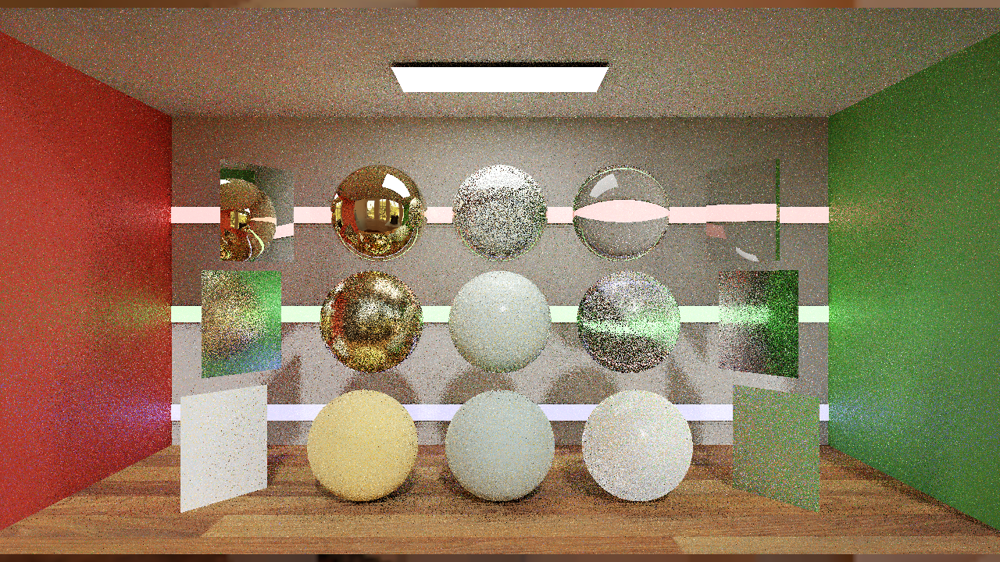
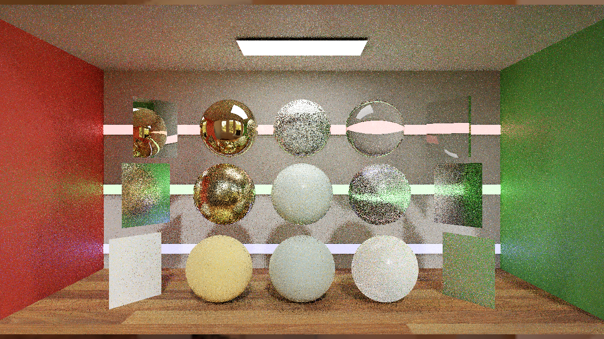
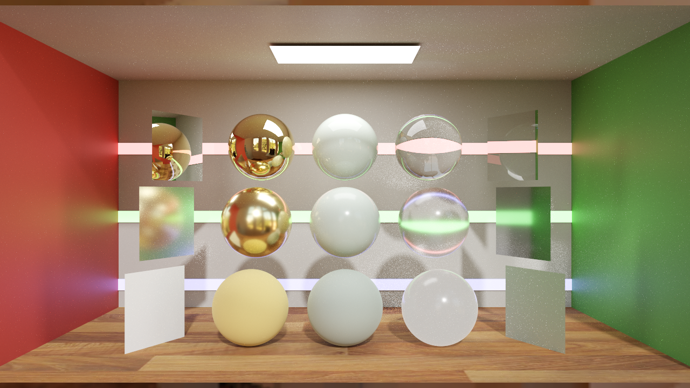
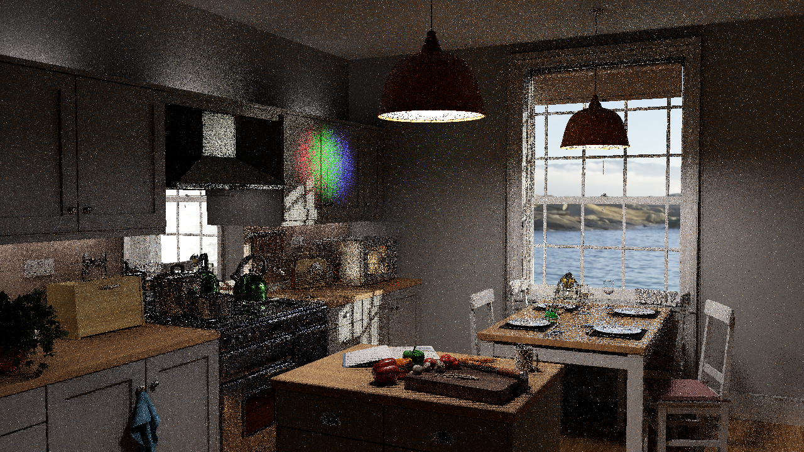
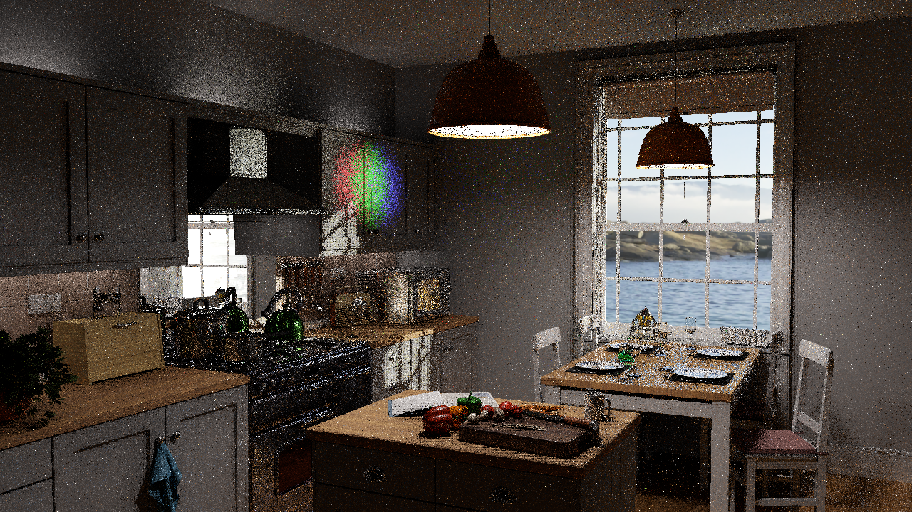
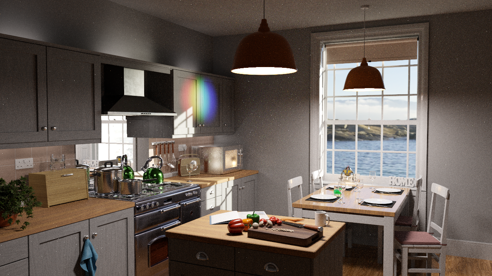

Basix Pathtracing · RTXPT1.9 baseline and B-series roadmap
Final accepted basis, checked2026-10-28: RTXPT1.9 renderer and its original scene assets. The repository is named RTXPT_Next. B0 retains its original RTXDI3.0 runtime. B1 adopts runtime3.1 for the existing DI/GI passes. External/RTXDI-SDK remains reference-only.
| Version | Meaning | Current status |
|---|---|---|
| RTXPT1.9 baseline (B0 alias) | Exact upstream renderer303b408, runtimea14e079, Assets a56be4e | Built in Release; initial paired GPU and display-quality comparison |
| B1 | RTXDI3.1 runtime/API migration for existing DI/GI | Implemented at 7010bb4; initial comparison in B1 results |
| B2 and later | Isolated, measured optimizations and paper-based extensions | Planned; not implemented |
The initial baseline/research stage is retained; the subsequent authorized B1 stage implements a limited runtime/API migration and first local comparisons. PT integration and paper algorithms remain future work. The branch baseline/rtxpt-1.9 and tag rtxpt-1.9-baseline point to the exact upstream baseline, distinct from documentation commits on main. Do not benchmark a moving main branch as an unnamed baseline.
Start here
- First B1 results and limitations
- Implementation roadmap
- Version comparison and capture protocol
- Image quality metrics
- RTXDI3.1 reference PT++ audit
- Architecture, RTXDI vs RTXPT, scene compatibility
- Seven focus papers A, focus papers B, all20 catalog, breadth notes
- Validation, source terms, research map
- Offline searchable study, structured evidence, verification
Summary and lessons learned
RTXDI is sampling machinery; RTXPT is a renderer consuming it. RTXPT1.9 uses RTXDI3.0, while the linked SDK3.1 reference implements only part of PT++. B1 aligns the existing DI/GI APIs; it does not activate new PT capabilities. B2+ should change one major estimator/scheduling mechanism at a time. Preserve source pins, scene/camera identity and reference settings across every comparison. Report quality, complete-frame time and VRAM together. Reported paper gains are not measurements of this project.
First B1 comparison: RTXPT1.9 and RTXDI3.1 migration
Measured locally on2026-10-28. This is an initial two-scene comparison of a limited dependency/API migration. It does not reproduce the Wyman papers or demonstrate a new ReSTIR PT pipeline.
Summary and lessons learned
B1 updates RTXPT's existing DI/GI integration to the RTXDI3.1 runtime. The active DI/GI algorithms remain equivalent under the scoped source audit; new PT++/CGNS capabilities in the reference SDK are not activated. Convergence's five matched process pairs show effectively unchanged GPU active time, with the observed difference well inside across-run variation. Kitchen and display-quality results are measured below. Across-run variation and display-sampling variation remain material; no general quality/performance improvement is established by this migration.
The important measurement lesson was to verify that the renderer continues drawing when unfocused. Upstream static scenes keep scene time at zero, and an active bounded capture can keep rendering without writing PNGs. A completed launch or a partial perfLog alone was insufficient. Separately, B0 repeat-image variation was larger than the first B0/B1 image difference; direct image inequality alone cannot identify an integration regression.
Immutable source and implementation scope
| Version | Root source | Active runtime | Original assets |
|---|---|---|---|
| B0 / RTXPT1.9 | 303b408ab81790a5051abd7573830b7a4112eb8e, tag rtxpt-1.9-baseline |
RTXDI3.0 a14e079c727ed8c4fd3173bd2aea8244c9d9f6d6 |
a56be4ed65029d2733fd02f00f4027ffd541eda8 |
| B1 | 7010bb4cda80788eb13cd9ee6143eb2f52a5b6ee |
RTXDI3.1 f12037fa8e97ebc08e9e3edfd2de528ed1772a4b |
Same pin |
B1 changes the External/Rtxdi gitlink and14 API-name replacements in Rtxpt/RTXDI/RtxdiPass.cpp, RtxdiResources.cpp, Rtxpt/SampleUI.cpp and AdvancedSampleUI.cpp. No renderer shader files changed. The scoped audit compared17 active DI/GI files after removing comments/whitespace and explicitly enumerated local-identifier renames. This supports the limited migration interpretation; it is not a correctness or performance proof. Shared Gaussian RNG changed from three to two random draws, but no active RTXPT DI/GI use was found in the inspected path.
B1 does not add a ReSTIR PT application bridge, a PT reservoir lifecycle, a compatible-neighbor pass, reciprocal pairing, replay compaction, guiding, splatting, geometry LoD reuse or BDPT. Those remain separately gated B2+ candidates. The SDK source at External/RTXDI-SDK is reference-only.
Hardware, build and measurement contract
Both versions built successfully in Release with CMake4.1.3, VS2022/MSVC19.44.35222 and the same pinned dependencies. The first B1 parallel build exceeded host commit/pagefile capacity; reducing build concurrency completed successfully. That setup failure is retained separately from accepted rendering runs.
Hardware was NVIDIA GeForce RTX4090 (24564MiB reported), driver617.42, AMD Ryzen7 5800X3D (8cores/16logical),32GB RAM, Windows10 Home10.0.19045. Clocks were observed, not locked. Background GPU applications were present. Whole-device allocation readings include them and cannot establish renderer-exclusive VRAM cost.
The isolated comparison uses original Convergence and Kitchen scenes at1280×720 output and verified internal resolution, static original camera/scene state,1spp, DI+GI on, NEE on/type2, SHaRC off, AA/denoiser off, subsampling off, firefly/post filters off, fixed exposure0/2 respectively. Frame generation is off in the chosen AA0 configuration. This is not the default reconstructed product preset.
Each scene has five process repetitions per version in balanced pair order: B0/B1, B1/B0, B0/B1, B1/B0, B0/B1. Each run has45s wall warmup and15s PresentMon2.6.0 capture. The frozen selection takes the last600 target-process/swapchain rows after dropping the final16. Validation requires zero PNG writes, at least616 valid target rows, actual1280×720 render dimensions, static scene time and enough internal frames to complete the capture guard's warmup.
The guard uses existing active captureSequence to keep ShouldRenderUnfocused true. The original static scene keeps time at0, so the requested20s capture never writes; the wrapper deliberately terminates its owned renderer after measurement. Do not use this protocol unchanged with animated scenes. partial-perf.csv validates state/coverage and is not the headline complete-frame timing.
PresentMon GPUBusy is target-process GPU engine active duration, not exclusive DI/GI time, display latency or a complete GPU critical-path profiler trace. CPU frame cadence and GPUTime are separate metrics. Observed presentation was DXGI, composed flip, SyncInterval0. The source CSV has no FrameType column; its absence is recorded rather than inferred from it. The representative table reports the median of five run medians. The paired-index bootstrap95% interval uses10000 seeded resamples of five process pairs; correlated per-frame observations are not treated as independent repetitions. The interval is exploratory with only five pairs.
Initial timing results
| Scene | B0 GPU active ms | B1 GPU active ms | B1 change | Exploratory95% change interval | Interpretation |
|---|---|---|---|---|---|
| Convergence | 4.4584 | 4.4530 | −0.121% | [−5.775%,+4.968%] | No demonstrated speedup or slowdown |
| Kitchen | 5.3398 | 5.3591 | +0.363% | [-6.893%,+3.318%] | No demonstrated speedup or slowdown |
Secondary timings and whole-device allocation:
| Scene | Version | CPU cadence median ms | GPUTime median ms | Median of GPU active p95s ms | Device memory median MiB (whole GPU) |
|---|---|---|---|---|---|
| Convergence | B0 | 4.5091 | 4.4621 | 4.9848 | 12800 |
| Convergence | B1 | 4.5559 | 4.4582 | 5.0401 | 12791 |
| Kitchen | B0 | 5.4340 | 5.3444 | 6.6096 | 12303 |
| Kitchen | B1 | 5.4196 | 5.3636 | 5.9579 | 12222 |
Whole-GPU memory includes background applications and is not evidence of a version-specific allocation saving. CPU cadence, GPU busy intervals and display composition remain distinct.
Full run medians, tails, CPU cadence, GPU time and device-wide resource conditions belong to the machine-readable evidence accompanying this report. A GPU active-time ratio is not an equal-quality speedup. No fixed-error or equal-time tuning sweep was performed in this first comparison.
Display image quality
The capture path exports tonemapped encoded sRGB PNGs. Initial tools evaluate display RGB MSE/PSNR, display-luma SMAPE100 and official LDR-FLIP1.7 at67pixels/degree. These are display-space diagnostics, not HDR-FLIP, linear radiometric RelMSE or an unbiasedness test. High-spp B0 reference captures retain their exact source/settings/hashes; reference mode can differ from real-time mode, and a finite reference is not assumed noise-free.
Five process captures per version/scene were scored against a B0 4096spp reference.
| Scene | Version | Median LDR-FLIP (range) ↓ | Median display MSE ↓ | Median PSNR dB ↑ | Median display SMAPE100 ↓ |
|---|---|---|---|---|---|
| Convergence | B0 | 0.24355 (0.24295–0.24381) | 0.018572 | 17.311 | 8.9718 |
| Convergence | B1 | 0.24338 (0.24309–0.24384) | 0.018515 | 17.325 | 8.9724 |
| Kitchen | B0 | 0.35210 (0.35175–0.35265) | 0.032208 | 14.920 | 30.1674 |
| Kitchen | B1 | 0.35226 (0.35177–0.35261) | 0.032269 | 14.912 | 30.1520 |
The 2048spp versus4096spp reference LDR-FLIP check was Convergence 0.02761; Kitchen 0.04723. This finite-reference discrepancy is retained as an uncertainty diagnostic, not a convergence proof. Similar ranges are descriptive; no formal independent-seed equivalence test is claimed.
A first Convergence B0/B1 diagnostic gave display MSE0.0113024, while B0 versus another B0 process gave0.0128540. This motivates repeated captures and reference scoring; it does not itself establish equal quality. No general CLI seed selector was verified, so repeated processes are not claimed to be independent Monte Carlo seeds. Temporal metrics, regional disocclusion tests and HDR export remain future work under Quality metrics.
Exclusions and limits
Preserved setup diagnostics include a failed launch with unsuitable working directory, a static-scene sequence that never reached capture time, unfocused no-capture runs that stopped drawing, the interrupted partial timing run, a sandbox-denied profiler retry, and a retry with reported ETW loss from an orphaned task trace. The orphaned trace was stopped; accepted runs report no ETW event loss (absence of a warning is not independent proof of a lossless trace). They are excluded from version summaries by explicit completeness/state rules. A first-use clipped-exposure screenshot is diagnostic only. Accepted runs are not silently selected for favorable values.
This first comparison covers two original static scenes, one GPU, one isolated raw-display preset and a migration-only B1. It does not establish scene-wide performance, temporal quality, cache/reconstruction behavior, renderer-exclusive VRAM, independent-seed confidence or paper-algorithm gains. Next: preserve B1, choose a consequential B2 integration/optimization from profiling, add verified linear-HDR/seed controls and animated tests before stronger estimator or quality claims.
Inspect the evidence
Raw timing traces, per-run manifests, quality scores and checksums are retained alongside the frozen protocol and portable capture/analysis tools. Images below show repeat1 without selecting for a favorable score. Generated scene captures retain the upstream assets’ applicable terms; see the pinned Assets repository.
Convergence captures
| RTXPT1.9 / B0 | B1 | B0 reference4096spp |
|---|---|---|
 |
 |
 |


Kitchen captures
| RTXPT1.9 / B0 | B1 | B0 reference4096spp |
|---|---|---|
 |
 |
 |


Roadmap: RTXPT1.9 → B1 → B2 and later
Deliverable and version policy
B0 is preserved as the unchanged source/scene baseline. B1 runtime/API migration is implemented and built; first comparisons are documented in B1 results. B2+ and the research features below remain planned. Every promoted B-version gets an immutable commit/tag, complete submodule manifest, executable/shader hashes, settings and result record. Keep RTXPT1.9 as a permanent comparator. Assign each later version only after its scoped feature and checks are complete; never relabel a changed build under an old result ID.
Baseline milestone
Use exact upstream RTXPT1.9 source303b408 and its pinned Assets a56be4e, runtimea14e079. Capture untouched upstream real-time defaults and a separate strict/reference transport preset. Preserve upstream scene materials, cameras and lights. Build requirements are upstream's CMake4.1+, supported Visual Studio/SDK and downloaded dependencies; merely checking out source is not a successful build. Benchmark assets by the same pin in all versions. Choose target hardware/resolution/VRAM budgets before claims.
B1: completed migration scope and later integration gates
Completed scope: runtime a14e079→f12037f, four host/UI compatibility files, unchanged DI/GI estimator path. Release builds and initial GPU runs succeeded. ReSTIR PT, CGNS activation, new PT++ behavior and the capabilities below were not implemented in B1. The list retains the wider integration plan; items4–6 are future gates.
- Create a dedicated B1 development branch from the named RTXPT1.9 baseline with the research harness available.
- Select owned runtime modification strategy; audit a14e079→f12037f changes. Reconcile renamed DI/GI APIs, parameter names and host/shader layouts. Keep a migration-only preset using the same baseline render path, so API migration can be separated from algorithm activation.
- Build and regress existing DI/GI and primary/indirect light accounting before PT work. Preserve RTXPT's material and scene semantics.
- If B1 enables ReSTIR PT, implement its application bridge and pass/resource lifecycle explicitly: path context calls, RNG/replay, emission/environment/NEE PDFs/MIS, ping-pong and preserved initial reservoirs, neighbor prepass, duplication maps and barriers.
- Test raw transport before DLSS/NRD, SHaRC, PSR/transmission, sparse tracing and async modes. Preserve NEE-AT/cache baseline controls; do not count direct paths twice.
- Benchmark existing3.1 footprint, history, roulette, CGNS and decorrelation choices independently. Some controls are present but off by default; history reduction is a biased heuristic.
Acceptance for broader future integration: all chosen capabilities are compiled, exercised and recorded; no unsupported mode silently falls through; baseline regressions, raw/reference tests and performance/quality/VRAM comparisons pass. If only runtime/API migration is complete, label that limited scope explicitly rather than claiming full PT integration. Effort estimate: roughly2–4 engineer-weeks after baseline/toolchain availability, with integration complexity uncertain.
B2: first isolated optimization
Select one consequential gap from the RTXDI3.1 PT++ audit after profiling B1. Candidates include unified primary DI/GI, all-candidate vector-weight shading, reciprocal spatial pairing, explicit replay compaction or the exact dual-motion-vector construction. Existing footprint, packed reservoirs and forced NEE reconnection are not new B2 ports.
Keep independently selected CGNS and reciprocal pairing as alternative backends until a reciprocal guided construction is derived. Static source evidence of a missing technique does not prove it is the best first performance target. Promote the selected B2 only after estimator/regression checks and an improvement in quality/time/VRAM tradeoff under matched settings. Retain B1 and RTXPT1.9 side by side. Estimate for one bounded change:1–3 engineer-weeks, scope dependent.
Later B-versions: research-backed candidates
The order below is proposed and may change after measured results. Each should be isolated before stacking; assign B3/B4/etc only when the actual scope is chosen.
| Candidate | Key interface and dependency | Acceptance / stop gate | Rough effort |
|---|---|---|---|
| Stochastic pairwise MIS | Alternative spatial estimator; immutable bounded reuse cells, all-domain canonical accounting, multiplicity and inverse selection probability | Exact discrete-domain oracle first; include cell-build/sort cost; stop if fresh samples win at equal time. Resolve official archive code terms before copying. | 2–4 weeks |
| ReSTIR PG | Initial proposals + model fitting + full mixture PDF + versioned replay | Diffuse-first; BSDF fallback, model eviction/startup/adaptation tests; measured bandwidth/VRAM budget. Paper's separate DI/no-roulette assumptions require validation. | 3–6 weeks |
| Reservoir splatting → multi-layer | Temporal candidate generation, canonical/backup/backward MIS and active-domain compaction | Single-layer correctness precedes2layer pinhole/no-motion-blur mode; collisions, overflow, disocclusion and scene-entry tests. | 3–6+ weeks |
| Geometry-LoD reuse | UV-space correspondence/BVH, both primary+reconnection mapping and area Jacobians | Consistent UV assets, inverse mapping and one LoD/object/frame. Reject undefined maps; per-ray LoD remains unsupported. | 3–6 weeks |
| Lightweight caustics → full BDPT | Technique-aware path reservoirs, forward/reverse PDFs, light tracing/cache and recursive MIS | Fix/reproduce rough-glass UCW bug; prove no double count, bound memory/queues; full BDPT optional if quality/time/VRAM justify it. | 4–8+ weeks |
Estimates are engineering planning ranges for one experienced graphics engineer, not paper results or delivery promises. Dependencies, assets and hardware can dominate. The phases are not additive calendar commitments.
Compatibility policy
Multi-layer paper excludes DOF/motion blur and off-screen history; leave these modes disabled for that technique until separately derived. Geometry-LoD paper assumes one per-object LoD per frame. CGNS's sample-independent geometric heuristic cannot acquire reservoir/luminance-dependent inputs while retaining its original proof. Stochastic MIS+CGNS needs explicit joint selection probabilities/support. PG's changing proposal models must not invalidate replay. Full BDPT and radiance cache termination need an explicit contribution partition. These are estimator gates, not cosmetic settings.
Comparison and promotion
For RTXPT1.9/B1/B2+ report raw and reconstructed image-quality metrics, complete-frame GPU median/p95, VRAM, temporal behavior and reference error. Run equal-time and equal-quality sweeps; do not multiply paper speedups from unrelated hardware/baselines. Measure all added preprocessing, replay, fitting, barriers and reconstruction costs. B1 versus RTXPT1.9 establishes update cost/benefit; B2 versus B1 isolates optimization benefit; B2 versus original shows cumulative change. Keep unsuccessful/scene-specific variants and reasons inspectable.
Version comparison protocol for Basix Pathtracing / RTXPT_Next
This chapter defines the general comparison contract. The initial B1 migration and bounded capture/timing tools are now implemented; the first measured subset and its explicit gaps are in B1 results. The final repository basis is RTXPT 1.9 at the root, including its Assets scene repository. The current RTXDI 3.0 runtime integration is the baseline. B1 applies runtime3.1 to the existing DI/GI path; the separate optional SDK checkout remains a reference and does not establish PT integration.
Immutable experiment versions
| ID | Exact source basis / planned scope | Comparison |
|---|---|---|
| B0 | NVIDIA RTXPT 1.9 source commit 303b408ab81790a5051abd7573830b7a4112eb8e, retained as tag rtxpt-1.9-baseline and branch baseline/rtxpt-1.9; existing External/Rtxdi gitlink a14e079c727ed8c4fd3173bd2aea8244c9d9f6d6; Assets gitlink a56be4ed65029d2733fd02f00f4027ffd541eda8 |
Preserve original rendering behavior, feature defaults and binaries. |
| B1 | 7010bb4cda80788eb13cd9ee6143eb2f52a5b6ee: RTXDI3.1 runtime/API update and necessary compatibility fixes; runtime f12037fa8e97ebc08e9e3edfd2de528ed1772a4b |
B1 vs B0 isolates the version update. Merely adding External/RTXDI-SDK is insufficient. |
| B2 | Future single immutable commit: audited PT++ baseline and required ReSTIR PT host integration, if absent after B1 | B2 vs B1; document already-shipped PT++ components to avoid counting them twice. |
| B3+ | One named technique/ablation per immutable commit, then separately named combinations: compatible neighbors, stochastic MIS, single/multi-layer splatting, guiding, geometry LoD and BDPT | Each vs its immediate parent and B0/B1; combination vs each constituent. Do not pool builds with different estimator settings. |
The fork setup merge c5b1569cf6eff2eb7fb85f1a47fc48722c254345 preserves prior remote history while switching the root to RTXPT; it is not NVIDIA's B0 source revision. Assign no invented SHA to a future version. Before each run, resolve full root/submodule SHAs, save clean/dirty status, compiler/CMake/DXC/SDK versions and configuration, and hash the executable, shader files and relevant DLLs. A version name or mutable branch is not an experiment identity. Preserve B0 and B1 executable bundles separately; this sample normally emits to bin, so sequential rebuilds can overwrite the comparison binary. Build configuration is Release for all performance comparisons; validation/debug runs are a separate result class.
Fixed scene and rendering contract
Keep Assets at a56be4ed65029d2733fd02f00f4027ffd541eda8 for every version. Record all scene JSON, glTF, material, texture, environment and camera-path hashes, plus any local Assets modifications. A gitlink does not describe local dirty scene changes. Do not silently refresh Assets between builds.
Use the main Rtxpt executable, not IntroSample, for these comparisons. The latter has a different hybrid rendering architecture. Start with the upstream regression scenes bistro-programmer-art.scene.json, convergence-test.scene.json and kitchen-with-test-stuff.scene.json; inspect the exact pinned assets before assigning claimed scene properties. Add named diagnostic camera/scene variants for thin geometry and moving disocclusion, glossy transport, small lights/indirect-only rooms, lens/shutter integration, LoD transitions and specular caustics when those techniques reach their gates. Preserve any new diagnostic scene variant as a separate immutable asset/configuration identity.
For every matched pair fix output resolution and internal render resolution, camera position/direction/up, projection/FOV, aperture, focus distance, shutter integration, scene time, animation/skin state, lights, environment, materials, path depth, roulette, texture sampling, SER/OMM state, reservoir settings/history limits, radiance cache, sample budget, reconstruction DLL/model/mode, async queue scheduling, exposure, firefly filters and post filters. Explicitly disable frame generation for timing; generated FPS is not renderer throughput. Do not assume that equal window dimensions imply equal DLSS render resolution. Keep SHaRC off in the isolated unbiased/sampling track, then test a separately labelled product configuration with SHaRC and reconstruction enabled identically across versions.
Source-verified capture controls
These controls were inspected in Rtxpt/SampleCommon/CommandLine.cpp, CaptureScriptManager.cpp/.h, PathTracePerfLog.h, Testing/RegressionTesting-GENERATE.bat, SequenceDisocclusionLag.bat and SequenceWeightBoost.bat at B0.
| Control | Verified meaning / limit |
|---|---|
--captureSimple --capturePath |
One image after default 64 warmup frames. In reference mode waits for accumulation completion. The 64-frame default is in the manager header, not an exposed CLI warmup option. |
--captureSequence --sequenceFPS --sequenceWarmupStart --sequenceRecordStart --sequenceFrameCount |
Fixed simulated scene timestep and named time interval. Warmup frame count is calculated from the start-time difference. sequenceWarmupStart < sequenceRecordStart is required; avoid --stopAnimations with sequence capture. Older names in help prose are not accepted option names. |
--captureSuffix |
Adds a version suffix to captured image names. Sequence files receive numbered names such as frame_000_B0.png. |
--cameraPosDirUp |
Nine comma-separated values; quote as one argument, especially when invoking batch scripts. Camera UI can copy the values. |
--realtimeAA 0 / 3 |
None / DLSS-RR. Set --standaloneDenoiser 0 for a no-reconstruction capture. |
--overrideRadianceCacheMode 0 / 1 |
Disabled / SHaRC. |
--overrideSubSamplingMode 0 |
Disable sub-1spp subsampling. Keep the same mode across paired baselines; evaluate subsampling separately. |
--overrideDLSSMode 6 |
DLAA. Verify actual internal resolution and supported mode at runtime. Other enumerated modes are listed in CommandLine.cpp. |
--perfLog <csv> |
Appends per-frame GPU timings for path-tracing build/compaction/fill only. Rows include scene time and render dimensions; incomplete timer rows are flushed on capture exit. This is not a complete-frame timer and omits other passes/reconstruction. |
--nonInteractive |
Suppresses input-requiring dialogs. A window is still required; --noWindow is explicitly rejected. |
There is no source-verified general command-line random-seed selector in the inspected parser. Record that independent-seed control is missing rather than fabricating a flag or calling repeated deterministic captures independent Monte Carlo trials. If seed scheduling is added later, first define and verify it as a separately versioned benchmark facility, consistently available to all compared builds.
Exact upstream examples, for later execution
Use each version's preserved bin/Rtxpt.exe with its bin directory as the working directory. The wrapper resolves absolute output paths; relative template paths must be adjusted accordingly. The commands below use only inspected B0 flags. Create each output directory beforehand. These are image validation templates, not complete performance benchmarks.
Raw here means the unreconstructed captured display image, with no AA or denoiser. The current PNG path is tonemapped sRGB; it is not linear HDR radiance.
.\bin\Rtxpt.exe --scene bistro-programmer-art.scene.json --width 1920 --height 1080 --stopAnimations --captureSimple --overrideRadianceCacheMode 0 --useNEE 1 --NEEType 2 --useReSTIRDI 0 --useReSTIRGI 0 --standaloneDenoiser 0 --overrideAutoexposureOff --overrideExposureOffset 4 --disablePostProcessFilters --overrideToRealtimeMode --realtimeSamplesPerPixel 1 --realtimeAA 0 --disableFireflyFilters --overrideSubSamplingMode 0 --nonInteractive --capturePath "Testing\Benchmark-B0\bistro-raw.png" --captureSuffix B0
For the matched reconstructed display capture, replace --realtimeAA 0 with --realtimeAA 3 --overrideDLSSMode 6; keep all other features and sample settings unchanged. Confirm actual runtime reconstruction/internal resolution before accepting the comparison.
The source-tested upstream regression script also generates 1spp and 32spp images with and without DLSS-RR and a 16384spp reference, followed by an external OptiX denoiser. Its 32spp and reference commands do not explicitly disable the firefly filter. Do not call that entire set a pure unbiased/linear-radiance test; align filtering explicitly for estimator evaluation and preserve the undenoised reference.
.\bin\Rtxpt.exe --scene bistro-programmer-art.scene.json --width 1920 --height 1080 --stopAnimations --captureSimple --overrideRadianceCacheMode 0 --useNEE 1 --NEEType 2 --useReSTIRDI 0 --useReSTIRGI 0 --standaloneDenoiser 0 --overrideAutoexposureOff --overrideExposureOffset 4 --disablePostProcessFilters --disableFireflyFilters --overrideToReferenceMode --referenceSamplesPerPixel 16384 --realtimeAA 0 --nonInteractive --capturePath "Testing\Benchmark-B0\bistro-reference.png" --captureSuffix B0
This is a high-spp display-space reference template. Check convergence with a larger sample count and independent seed/reference route before treating its error floor as negligible. Reference mode and real-time mode can differ in enabled approximation/filtering; audit parity for each intended statistic. Scene-linear HDR export and strict mean/bias testing remain future instrumentation requirements, not capabilities proven by this PNG command.
The current disocclusion sequence is source-tested at 8 frames/15 simulated FPS after scene-time warmup from 4.0 to 5.82 seconds:
.\bin\Rtxpt.exe --scene bistro-programmer-art.scene.json --width 1920 --height 1080 --propShowTags LagTestWallLamp --propCameraAttach SHIP_LagTestWallLamp --captureSequence --sequenceFrameCount 8 --sequenceFPS 15 --sequenceWarmupStart 4.0 --sequenceRecordStart 5.82 --useNEE 1 --NEEType 2 --useReSTIRDI 0 --useReSTIRGI 0 --realtimeSamplesPerPixel 1 --standaloneDenoiser 0 --realtimeAA 0 --overrideToRealtimeMode --overrideAutoexposureOff --overrideExposureOffset 4.0 --disableFireflyFilters --disablePostProcessFilters --nonInteractive --capturePath "Testing\Benchmark-B0\disocclusion.png" --captureSuffix B0 --perfLog "Testing\Benchmark-B0\disocclusion.csv"
Keep that sequence for visual regression, but its 8 frames are too short for a general steady-state performance result. A longer proposed run can use the same verified sequence controls with a preregistered interval and at least 600 recorded frames, checking animation looping and scene-time coverage. No new CLI benchmark facility is implied. ReSTIR PT and future paper switches are not present in these commands; B0's useReSTIRDI/useReSTIRGI switches must not be relabelled as PT.
Warmup, timing and repeated runs
Separate first-use loading/shader compilation/OMM construction/cache initialization from steady state, retaining first-use costs as a distinct result. The simple-capture 64 frames are only an upstream default, not proof of convergence. For planned steady-state captures use an initial 240-frame interval at 60 simulated FPS, then at least 600 recorded frames; extend warmup if measured passes/cache occupancy have not stabilized. Test cold-start and history-reset behavior separately so warmup does not conceal instability or disocclusion lag.
Use at least five process-level repetitions per version/scene/configuration in randomized or balanced order, with GPU temperatures/clocks checked. Repeat the complete paired workload, not individual pixels treated as independent samples. Report the median of run-level medians and across-run confidence intervals; include frame-time p50/p95/p99, mean and standard deviation, sample count and run duration. When runs have correlated frames, compute uncertainty from run blocks or suitable block bootstraps, not a naive confidence interval over all frames. Preserve dropped frames, crashes and outliers with stated exclusion rules.
Use perfLog for attribution only. Add an external GPU timeline/profiler measurement of complete submitted-frame critical-path latency, plus CPU frame time and steady-state throughput in a no-image-write measurement interval. Screenshot readback/PNG writing may stall queues and alter CPU throughput; report capture timing separately. With asyncPrefix/async DLSS, summing per-pass durations can double-count overlap; report both individual durations and actual critical path. VSync/frame limit/window composition/Reflex state must be fixed and recorded. Debug layers, GPU validation and intrusive captures are disabled for final performance timing. The first benchmark uses an explicit bounded wrapper and the upstream static active-capture guard to keep rendering while unfocused without writing PNGs. See B1 results; this measures process GPU engine active time and CPU cadence, not a full critical-path profiler trace.
Quality and efficiency comparisons
Use the paper-backed definitions and scope in Quality metrics when selecting the final image/temporal metrics. Keep those source-specific metrics distinct from the general experiment controls below.
- Equal configuration / equal spp: B0 vs B1 isolates SDK integration changes; preserve DI/GI/PT mode names accurately. Verify image equivalence and mean before attributing performance. Preserve both default-product and isolated-sampling tracks as separate tables.
- Equal time: Sweep candidate/neighbor/sample counts in each version and compare error at matched complete GPU frame budgets. Do not compare one shader duration to a full reconstructed frame. Keep resolution, camera, reconstruction and bias settings identical.
- Equal quality: Plot complete frame cost against a preregistered error threshold; report interpolated time-to-threshold only between measured settings, with uncertainty. Declare unattained thresholds instead of extrapolating a speedup.
- Raw / reconstructed: Keep display PNG MSE/PSNR and FLIP labelled display-space. For estimator accuracy add verified linear-radiance HDR capture later and report RMSE/relative error, energy drift and long-run statistical mean. Reconstructed images get temporal/FLIP tests, not an unbiasedness claim. Save raw inputs and reconstruction configuration separately.
- Temporal: Match scene-time indices; measure disocclusion recovery, flicker/temporal error, firefly tails and long-history correlation on animated camera/geometry/light sequences. Matching fixed FPS advances scene time; it does not mean the renderer attained that real FPS.
- Resources: Report peak/local VRAM, reservoir bytes per pixel, guide-grid storage, rays/shifts per pixel, bandwidth/occupancy where measured, CPU time and loading/compilation cost. For LoD report geometry/AS cost and approximation error; for guiding include training updates; for splatting include collisions/layer overflow; for BDPT include light cache and MIS/replay cost.
The existing regression comparison script uses PSNR against per-image GOLD captures and color-coded historical drop thresholds. It is useful for regression triage, but is not a cross-version equal-quality benchmark or an unbiasedness oracle. Preserve GOLD images for every immutable configuration rather than overwriting the only baseline.
Required run manifest and results table
Required manifest fields: version ID/root SHA; all recursive submodule SHAs; executable/shader/DLL hashes; Assets pin and dirty status; scene/camera/config hashes; full launch command; effective runtime feature state; OS/build; GPU exact model, VRAM, driver, power limit, clocks and temperature; CPU/RAM; compiler/DXC/CMake/toolchain; API; presentation/VSync/Reflex state; reconstruction model/DLL/mode/internal resolution; seeds or explicit seed-control gap; warmup/record interval; repetitions; measurement tools/version/scope; reference identity; output hashes; validation/errors/exclusions.
| Version pair | Scene/config | Raw or reconstructed | Frame p50/p95/p99 | Error / temporal metric | VRAM | Equal-time gain | Equal-quality gain |
|---|---|---|---|---|---|---|---|
| B1 vs B0 | Convergence and Kitchen,1280×720 isolated DI/GI | Unreconstructed display captures | Measured scope | Display-space metrics | Device-wide only | Not established | Not established |
| B2+ vs parent and B0/B1 | Pending implementation and manifest | Pending | Not measured | Not measured | Not measured | Not measured | Not measured |
Initial hardware: RTX4090/24GiB, driver617.42, Ryzen7 5800X3D, Windows10. Full first-run details and measured configuration are in B1 results; paper hardware does not substitute for this machine.
Summary and lessons learned
RTXPT already supplies repeatable screenshot/sequence controls and limited GPU-pass CSV logging. Those are sufficient to preserve visual regression inputs, but do not establish full-frame performance, independent-seed statistics or linear HDR estimator correctness. Keep B0 immutable, isolate the B1 runtime/API update, then add one research change per B2+ identity. Publish gains only after complete-frame, paired-configuration experiments; paper-reported speedups and generated FPS do not substitute for these measurements.
Image quality and temporal stability measurement plan
Checked 2026-10-28. This chapter retains the paper-backed metric specification and broader proposed protocol. Implemented initial tools measure tonemapped display RGB MSE/PSNR, display-luma SMAPE and official LDR-FLIP; see B1 results. HDR-FLIP, linear-HDR error, independent-seed statistics and temporal metrics remain future instrumentation. B0 is exact RTXPT1.9; B1 is the runtime3.1 DI/GI API migration; B2+ are future research changes.
What the selected papers actually report
| Source | Verified metric and locator | Important boundary |
|---|---|---|
| PT++ | HDR-FLIP, §7 pp11–12; MSE and FLIP convergence, §7.4 pp14–16 and Fig15 p17; mean absolute relative bias, Fig5 p9 | Fig15 reruns one camera animation 1024 times using different sampling seeds and compares the same view. Its FLIP description does not specify exposure range, tone mapper, PPD or software revision. Those must be recorded in our tests; reproducing defaults is not reproducing undisclosed paper settings. |
| Compatibility-guided neighbors (CGNS) | SMAPE, footnote3 p8; spatial relative covariance and temporal relative autocovariance, Appendix A p16; capture protocol, §7 p9 | Main numeric tests use static camera, 40-frame warm-up, ten trials over 2048-frame sequences, temporal lag 3, radius-8 spatial covariance. Geometrically hardest 10% of pixels are also reported. Dynamic testing requires added alignment controls. |
| Stochastic pairwise MIS | MAPE formula, §6 p7 | Figure5 p8 captures the last frame of a 50-frame animation; that is not a complete temporal quality measurement. Formula does not fully specify RGB reduction/color-space handling. |
| ReSTIR PG | MAPE with grayscale reference denominator, §5 p8 footnote4 | The tested configurations use separate DI and indirect guiding, no roulette and scene-specific bounce caps. Do not compare metric values across these settings as if they shared one estimator budget. |
| ReSTIR LoD | RelMSE labels in Fig1 p1 and result captions | No exact RelMSE formula was identified in the inspected main PDF text. A named RelMSE score is insufficient to recover channel reduction and stabilization convention. The formula below is our explicit project definition until code/supplement verification supplies the authors' exact one. |
| Multi-layer reservoir splatting | MAPE and FLIP, §6 p5 | Its footnote3 warns whole-frame errors can hide gains because disoccluded regions are a small fraction of the image. It cites 2020 FLIP; HDR versus LDR mode and settings are not established by that citation alone. |
None of these paper excerpts establishes a common universal pass/fail threshold. Report operating curves, per-scene/ROI outcomes and uncertainty before choosing application-specific acceptance targets.
Shared notation and preprocessing: proposed project conventions
Let be linear scene-referred RGB radiance from independent run , frame , pixel , channel ; is the high-quality reference for that exact frame, scene, geometry/LoD, shutter/lens/filter and lighting state. Let after conversion to linear Rec.709 primaries. These luminance coefficients and the conversion rule are our documented conventions, not a claim that all papers use these exact coefficients. Store source primaries, white point, radiometric scale, units/exposure multiplier and conversion matrix.
Use float HDR captures before tone mapping, sharpening, UI and display transfer for radiometric metrics. Do not compute these metrics on heatmaps or 8-bit screenshots. Do not normalize each candidate to its own brightness: that can conceal energy bias. If storage uses pre-exposure, undo the recorded multiplier before evaluation. Keep identical finite-value handling across variants; count NaN/Inf/negative samples and report them separately rather than silently hiding failures with clamping. Define the reference's uncertainty from independently converged reference batches; reference noise must be small enough to resolve the proposed difference.
Always state whether a reported scalar is a mean over channels, pixels, frames or independent runs. Evaluate each run before averaging its metric for single-frame quality. Evaluating only the image averaged across runs answers a bias/convergence question and suppresses single-frame noise.
Metric definitions and attribution
SMAPE following CGNS
For nonnegative luminance , , use
This follows CGNS footnote3 p8. Preserve its factor 100, rather than substituting the factor 200 used by another common SMAPE convention. The fixed epsilon is tied to image scale; record the radiance scale to make comparisons reproducible. SMAPE limits bright outlier dominance but is not a pure variance statistic: bias contributes, and saturated-color errors can be underrepresented in luminance. Report an RGB-sensitive metric alongside it. The papers do not establish external display exposure settings for this formula; compute on the explicitly recorded HDR scale as our test convention.
MAPE following SPMIS and PG, with explicit project channel handling
SPMIS §6 p7 writes
PG footnote4 p8 instead explicitly uses grayscale reference in the denominator:
The excerpts do not completely specify color conversion and reduction. Our named MAPE_RGB_Ydenom resolves them: average absolute RGB error over all channels/pixels, divide each channel's error by , where is the full reference frame mean luminance. Preserve the full-frame when reducing an ROI so its normalization does not change merely because the crop changes. This ROI choice is ours. Also emit MAPE_Y on luminance if a direct scalar-luminance comparison is useful. Keep values as ratios; multiply by 100 only for a separately labelled percent display. If , report the relative metric unavailable and report absolute error for that frame rather than silently inventing a denominator.
RelMSE: explicitly proposed project definition, not recovered LoD implementation
Let , . Define
This is an original measurement convention inspired by relative-error reporting in the ReSTIR literature. It is not asserted to reproduce ReSTIR LoD's exact scores. Its denominator is not ; those alternatives differ. Record the formula/version in every result. Use full-frame for ROI scores and flag all-black references as unavailable for this relative measure. Include absolute linear RGB MSE in parallel,
because relative normalization emphasizes dark regions while MSE emphasizes bright energetic outliers. Do not switch definitions between B0/B1/B2 or rank variants against published RelMSE numbers from another convention.
HDR-FLIP and displayed-image FLIP
PT++ explicitly uses HDR-FLIP. It combines errors from exposure-compensated, tone-mapped image pairs. The official implementation exposes both images equally, computes LDR-FLIP at each exposure, and takes the per-pixel maximum; mean HDR-FLIP averages that map. Thus
This compact definition delegates LDR-FLIP's perceptual color/feature filtering to the official evaluator; it is not a substitute reimplementation. Pin evaluator revision/backend, PPD, tone mapper, exposure start/stop/count and input conversion. Auto exposures derive from the reference in the inspected implementation; save resolved values and reuse them across variants. PT++ Fig15 p17 notes FLIP is less sensitive to fireflies/correlation but remains sensitive to brightness differences. Sources: HDR-FLIP publication, official evaluator, parameter documentation.
Our proposed reporting is mean plus an uncolored error map and ROI/high-percentile summaries. Evaluate full-frame FLIP first, then reduce its map over ROI masks: cropping inputs before the evaluator changes spatial-filter boundaries and potentially auto-exposure. For the actual displayed output, separately evaluate LDR-FLIP after the fixed documented display transform. Do not call that HDR-FLIP or mix it with raw-radiance scores. A static perceptual image metric does not measure temporal flicker.
Relative spatial covariance and temporal autocovariance: exact CGNS equations
CGNS Appendix A p16 uses grayscale luminance , sample mean , and :
It averages in radius-8 disks, then over pixels. Although introductory wording mentions ground-truth normalization, the printed equations normalize by the sample mean, not . Do not silently replace the denominator when claiming reproduction. The text does not explicitly resolve inclusion of the center pixel or border weighting; our convention is to exclude the center (self-variance), average valid neighbors per center, then average centers. Label this convention; exact author-code verification may require changing it before claiming bit-level reproduction.
For independent video sequences of the same static scene, define separate means at each frame and use lag :
Average over valid frames/pixels. CGNS reports similar behavior for lags 1–5. This is normalized covariance, not Pearson correlation: do not divide again by standard deviations. Show covariance and error together: increasing independent noise or resetting history can reduce covariance while harming quality. Full-frame static-scene covariance is the paper-aligned measurement; moving cameras/objects require separate treatment below.
Reproducible capture and comparison plan: proposed, not executed
- Freeze variants and content. Archive B0 executable/config/dependency/asset revisions and untouched RTXPT 1.9 scene set. Define B1 and each B2+ variant before benchmarking. Record GPU/driver, clocks/power state, resolution/internal render scale, sample rate, bounces, light sampling, cache/denoiser modes and memory footprint. Add challenging test scenes only as explicitly separate workloads with their own asset license/revision and scene requirements.
- Separate output tracks. Capture raw HDR with denoising disabled; a fixed NRD path; and a fixed DLSS-RR path where available. Keep model/version, input scale, history reset, jitter, exposure and sharpening settings constant within each track. Raw versus denoised outcomes answer different questions. An approximate cache/reference mode must be labelled and compared to a matching support/transport reference; denoising success cannot establish an unbiased estimator.
- Generate matched references. For static frames and deterministic animations, render independent high-spp references at each required time and exact scene state. For LoD, retain a same-LoD reference for estimator error and an all-high-detail reference for geometric approximation error; do not combine those into an unexplained single score. Match shutter/lens/pixel filter, output size and exposure policy. Record reference noise/convergence checks.
- Use independent runs and histories. Reset the complete history at the start of each independent seed run; preserve history within a run. Pair B0/B1/B2 by camera/event/seed schedule for lower-variance differences, but do not assume identical random-number consumption after algorithm changes. Use run/sequence-level confidence intervals or bootstrap; frames/pixels connected by ReSTIR history are not independent replicate counts. Choose run count from a pilot and precision target, then record the fixed capture design. CGNS's ten 2048-frame sequences/40-frame warm-up and PT++'s 1024 reruns are source examples, not arbitrary universal requirements.
- Include cold and steady states. Measure startup/history reset separately from warm steady state, plus scripted camera pans, thin-geometry reveal, large disocclusions, moving emitters, material changes, caustic discovery and LoD switches. Warm-up must not erase the very transient being evaluated. Keep event time/trajectory identical across methods.
- Compare both equal budget and equal quality. At equal GPU time, permit explicitly logged spp/neighbor-budget changes; report the resulting quality/memory. At equal quality, estimate time-to-target from sampled operating curves. Keep display reconstruction track and target definition fixed. Do not multiply speedups from different papers or report a target never reached as an interpolated success.
ROI, flicker and recovery: proposed definitions
Derive masks from deterministic high-quality geometry/visibility metadata, not each algorithm's observed error. Record total/full-frame area and invalid counts for every ROI. Report whole frame plus (a) first visible/disoccluded pixels, (b) time-since-visibility age buckets, (c) thin geometry/foliage, (d) glossy/specular paths, (e) shadows and caustics, and (f) stable regions. A hard-pixel ROI based on geometric neighbor compatibility can follow CGNS §7 p9, but freeze its definition across variants. Multi-layer §6 p5 motivates disocclusion-specific scores because whole-frame averaging dilutes them.
For flicker under motion, compute errors relative to the per-frame reference and warp only geometrically valid correspondences. A proposed supplementary statistic is
excludes disocclusions, invalid warps, topology changes and unsupported transparency; document interpolation and mask rules. This is our metric, not CGNS Eq17. Report unmatched/disoccluded regions in their own recovery curves rather than filling missing warped errors with zero. Static sequences additionally use exact CGNS covariance. A camera-locked flicker score can otherwise mistake real motion for stochastic instability.
For an event at , plot ROI error versus frames and elapsed GPU milliseconds; include confidence bands. Also report a fixed-window mean error/AUC , first-frame error, worst-frame error, and persistent residual. A proposed recovery time is the first for which . Choose , hold length , and window from scene/use-case needs before evaluating candidates; publish them, do not present them as universal paper thresholds. If never reached, mark recovery as not reached by the capture horizon. Keep a decaying ROI cohort tied to the same surfaces/event, or explicitly state that the ROI evolves; otherwise changing mask membership can manufacture apparent recovery.
Bias, outliers and estimator checks
Use independent run averages at the same frame/event state to estimate . Show signed bias/energy maps as well as an absolute relative summary; attach uncertainty from both test and reference. PT++ Fig5 p9 reports ; our stabilized luminance summary can use , explicitly labelled as our stabilized version. A confidence interval containing zero is not a proof of unbiasedness. Test strict estimator settings and interactive bias controls separately, including duplication history reduction, clamping and caches.
Retain raw max/high-percentile errors, firefly counts with a declared scale-aware definition, missing/invalid samples, and spatial error maps. Perceptual and relative metrics can suppress bright outliers; absolute MSE alone can overemphasize them. Use complementary measures and inspect failure sequences. Do not claim numerical stability from an appealing tone-mapped still image.
Summary and lessons learned
The selected papers support a complementary suite: radiometric error (MSE/explicit RelMSE and MAPE), luminance-balanced SMAPE, perceptual HDR/display FLIP, and spatial/temporal covariance. Their metric names do not imply identical preprocessing or normalization. Exact CGNS equations and paper-specific settings are preserved above; unspecified choices are labelled project conventions. B1's first implemented evaluation uses the explicitly labelled display-space subset in B1 results; it does not establish radiometric accuracy, temporal stability or paper-exact metric parity. Preserve B0 and add verified HDR/seed controls before those stronger claims.
PT++ implementation audit of the RTXDI 3.1 reference
Checked 2026-10-28. Final project baseline B0 is untouched RTXPT 1.9 with its scenes and original dependency pins. RTXDI 3.1 is linked under External/RTXDI-SDK as a reference only; its runtime has not been applied to B0. This is a static audit of that separate reference SDK runtime and its Full Sample paths (inspected locally under work/RTXDI-SDK-reference), not the RTXPT baseline, a build, GPU execution, or a claim about every renderer. Future B1 adopts RTXDI 3.1; B2+ contains optimized variants. Current scope is baseline/roadmap/comparison design, with no renderer implementation. Runtime revision: NVIDIA-RTX/RTXDI-Library@f12037fa8e97ebc08e9e3edfd2de528ed1772a4b. Reference Full Sample source matches RTXDI SDK revision a6efab966b7c3b272da0461578eb56ac61c7cbff in the separate SDK reference checkout. Paths below are relative to the RTXDI SDK3.1 reference root, not the RTXPT project root; PT/ means Libraries/Rtxdi/Include/Rtxdi/PT/; Sample/ means Samples/FullSample/.
Conclusion about reference only: RTXDI 3.1 incorporates an important subset of PT++ and also CGNS, but it is not a complete transfer of every optimization in PT++ §§3–6. Existing code should be enabled/validated where appropriate. Missing paper mechanisms are separate extension candidates; importing the whole paper again would duplicate working features.
| PT++ technique | Status in inspected active path | Evidence and boundary | Confidence |
|---|---|---|---|
| §3 reciprocal paired spatial reuse | Absent from inspected runtime/Full Sample path | PT/SpatialResampling.hlsli:47–66 chooses independent offset-buffer or CGNS neighbors. :182–225 shifts neighbors into the pixel; :247–284 separately shifts the selected reservoir toward neighbors for correction. :332–339 invokes both loops. No reciprocal pairing texture, pair-owned shared shift result or companion pairing dispatch exists in the active host sequence (Sample/Source/RenderPasses/LightingPasses/ReSTIRPTRenderPasses.cpp:84–144). The word "pairwise" in a helper comment is not evidence of reciprocal neighbor pairing. |
High for this active path; not a claim about unrelated branches |
| §4 footprint / inverse footprint reconnection and roughness safeguard | Present | PT/PathReconnectibility.hlsli:29–67 computes thresholds/footprints; PT/HybridShift.hlsli:193–224 tests ray and inverse footprints; PT/InitialSamplingPathTracerContext.hlsli:313–316 initializes thresholds. Libraries/Rtxdi/Source/ReSTIRPT.cpp:53–63 defaults to footprint mode with minConnectionFootprint=0.02. |
High |
| §5 duplication map and confidence-cap reduction | Present, configurable and deliberately biased according to paper | PT/DuplicationMap.hlsli:124 implements map pass; PT/TemporalResampling.hlsli:405–420 fetches prior duplication, normalizes by 288, reduces history cap and validates neighbor with that cap. Sample/.../PT/SpatialResampling.hlsl:74–75 writes sample-ID inputs. Host ReSTIRPTRenderPasses.cpp:132–135 dispatches map conditionally. Default reduction follows DLSS-RR mode (Libraries/Rtxdi/Source/ReSTIRPT.cpp:86–89,110–112). Paper §5 pp9–10 explicitly states this introduces bias; that matters even if SDK overview wording emphasizes variance/correlation. |
High |
| §6.1 unified primary direct + indirect illumination in one PT reservoir | Not present in inspected Full Sample estimator path; low-level runtime can accept supplied light candidates but full integration is not demonstrated | Sample/.../PathTracer/RAB_PathTracer.hlsli:511–530 first samples a primary BSDF continuation and traces to the next surface; :400–413 performs NEE only in HandleHit after that trace. :270–287 and :425–439 explicitly reserve ordinary primary emissive/environment transport for DI, with mirror exceptions. Initial context starts tracing at bounce depth 2 (PT/InitialSamplingPathTracerContext.hlsli:290–296). Sample/Source/App/SceneRenderer.cpp:1131–1133 keeps separate direct/indirect pass activation; Sample/Source/RenderPasses/LightingPasses/LightingPasses.cpp:677–688 renders DI separately. This differs from paper's adding NEE at the primary hit to the same PT initial RIS. |
High for Full Sample behavior; runtime extensibility is not an implementation claim |
| §6.2.1 compressed 64-byte PT reservoirs | Present | PT/ReSTIRPTParameters.h:62–73 stores four uint4 values: 4×16=64 bytes. PT/Reservoir.hlsli:263–278 packs normal/M and discrete fields; :284–306 unpacks. Actual packed stride is established by layout, not merely an RGB target field or README. |
High |
| §6.2.1 all paper micro-optimizations / divergence improvements | Partially evidenced, not a complete equivalence claim | Packing is verified above. Source contains conditional selection and optional thread reordering, but the paper's complete micro-optimization set and their individual performance contributions cannot be reconstructed from static final source. No 2–3× speedup versus this base is established. | Unresolved for full paper-equivalence; high for specifically cited code |
| §6.2.2 explicit replay stream compaction over pixel–neighbor pairs | Absent from active host/runtime path; related SER hook exists | Active reuse is inline per-pixel loops (PT/SpatialResampling.hlsli:182–225,247–284) and host launches full viewport passes (ReSTIRPTRenderPasses.cpp:90–121). No queued pair worklist/compaction dispatch is present. PT/HybridShift.hlsli:357–360 has an optional NvReorderThread grouping replay/non-replay threads, but Sample/.../RtxdiApplicationBridge.hlsli:61,70,75 defines RTXDI_PATHTRACER_USE_REORDERING as 0 in every supplied backend branch. Separate path-loop reordering at RAB_PathTracer.hlsli:516–519 is enabled only for the non-SPIR-V ray-pipeline branch (RtxdiApplicationBridge.hlsli:64–76). SER reordering is related divergence work, not proof that the paper's explicit pixel–neighbor stream-compaction method is integrated. |
High for active path; distinguish disabled hook from enabled behavior |
| §6.2.3 forced NEE light reconnection | Present | PT/InitialSamplingPathTracerContext.hlsli:223–249 chooses an NEE light as reconnection vertex when no earlier vertex qualifies and stores light identity; comment explicitly forbids replay to the NEE sample. Replay PT/HybridShiftPathTracerContext.hlsli:203–215 disables NEE sampling. PT/HybridShift.hlsli:374–385 handles the stored NEE light reconnection. |
High |
| §6.2.4 roulette at initial generation but not replay | Present, optional; Full Sample default is disabled | Initial context PT/InitialSamplingPathTracerContext.hlsli:40–47 allows roulette after initial depth and accumulates its PDF; hybrid context PT/HybridShiftPathTracerContext.hlsli:39–46 returns false. Application Sample/.../PathTracer/RAB_PathTracer.hlsli:474–485 draws roulette from the initial RNG, adjusts throughput and records continuation probability. Initial RIS excludes the roulette PDF from the target (InitialSamplingPathTracerContext.hlsli:351–357). LightingPasses.cpp:91 sets enableRussianRoulette=false by default. Presence is not default activation. |
High |
| §6.3 vector-weight shading / marginalization over all spatial candidates | Absent in inspected spatial/final-shading path | Spatial resampling retains only selectedTargetFunction when a reservoir wins (PT/SpatialResampling.hlsli:220–224), then scalar MIS-like normalization (:288–294,334–339). Final shading uses selected reservoir weightSum * targetFunction (Sample/.../PT/FinalShading.hlsl:66–73,170–173). No sum of RGB candidate resampling weights is accumulated or passed as a separate shading output. Storing a float3 target is necessary for RGB shading but does not implement the paper's marginalization estimator. |
High for this active path |
| §6.4 disocclusion recovery with dual motion vectors | Specific paper mechanism not verified; inspected temporal path uses a different fallback | Full Sample loader selects either ordinary or PSR motion (Sample/.../PT/TemporalResampling.hlsl:35–41) and passes one vector into runtime (:58). Runtime reprojects with that vector (PT/TemporalResampling.hlsli:391–396) and offers a zero-motion disocclusion fallback (:68–87). No occluder/disoccluded-surface relative-motion construction from Zeng et al. 2021 was found in the active path. Ordinary-versus-PSR vector selection and zero-motion fallback should not be labelled the paper's dual-motion-vector algorithm. |
High for observed path; classify exact paper method as not verified rather than a universal absence claim |
Separate CGNS confirmation
CGNS is already implemented, although it is a separate HPG 2026 paper rather than one of PT++'s original contributions. PT/SpatialNeighborSelection.hlsli:48–123 implements selection; PT/SpatialResampling.hlsli:49–58 consumes its buffer; ReSTIRPTRenderPasses.cpp:102–105 dispatches the selection prepass and barrier. Libraries/Rtxdi/Source/ReSTIRPT.cpp:110 defaults enableSpatialHeuristicMode=0, so the next task is enable-and-validate, not a new algorithm port.
Roadmap consequence
Preserve RTXPT 1.9 as untouched B0 with original scenes/dependencies, and define reproducible timing/quality/memory comparisons first. B1 now applies the RTXDI3.1 runtime/API migration to the existing DI/GI path; reference PT feature presence still does not establish active ReSTIR PT behavior. See B1 results. Measure B1 against B0 before B2+ isolated optimization. The table identifies reusable reference code and actual reference gaps: unified DI/GI estimator, all-candidate vector shading, reciprocal spatial pairing and explicit replay scheduling. A combined reciprocal+CGNS construction needs design because guided neighbors need not be reciprocal. Verify dual-motion-vector support separately; do not relabel PSR/zero-motion behavior. Keep bias controls separate in correctness-reference runs. This reference audit itself is source evidence; later local measurements belong to the separately scoped B1 results.
Paper reference: PT++ author PDF, §§3–6, pp4–11; baseline comparisons §7/Table1 are against the original 2022 implementation and cannot be reused as a speedup prediction for RTXDI 3.1 or RTXPT 1.9.
Architecture and exact baseline pins
Repository structure
| Path / ref | Revision | Role |
|---|---|---|
| Root RTXPT v.1.9.0 | 303b408ab81790a5051abd7573830b7a4112eb8e |
Initial renderer source baseline |
Assets |
a56be4ed65029d2733fd02f00f4027ffd541eda8 |
Original pinned scenes, models, textures and supporting assets |
B0 External/Rtxdi |
a14e079c727ed8c4fd3173bd2aea8244c9d9f6d6 |
Immutable baseline runtime3.0 |
| B1 root | 7010bb4cda80788eb13cd9ee6143eb2f52a5b6ee |
Runtime/API migration for existing DI/GI; no new PT path |
B1 External/Rtxdi |
f12037fa8e97ebc08e9e3edfd2de528ed1772a4b |
Active runtime3.1 |
External/RTXDI-SDK |
a6efab966b7c3b272da0461578eb56ac61c7cbff |
Linked SDK3.1 source reference, not a baseline build input |
SDK3.1's Libraries/Rtxdi |
f12037fa8e97ebc08e9e3edfd2de528ed1772a4b |
Reference uses the same runtime revision as B1 |
baseline/rtxpt-1.9, rtxpt-1.9-baseline |
303b408ab81790a5051abd7573830b7a4112eb8e |
Immutable source identity for comparisons |
Docs/Research and Benchmarks contain planning/evidence. B1 preserves original renderer shaders and CMake build, updates four host/UI API-compatibility files and the active runtime pin. The separate linked SDK is reference-only; it is not an active renderer build component. See B1 results.
Current renderer surfaces
| Path from repository root | Existing role / future extension surface |
|---|---|
Docs/Design.md |
Unified forward PT, NEE-AT, SHaRC, PSR/decomposition, sparse rendering and async reconstruction |
Rtxpt/RTXDI/RtxdiPass.cpp, RtxdiResources.cpp |
DI/GI host bindings and resources; B1 API/layout alignment first, PT resources separately |
Rtxpt/RTXDI/RtxdiApplicationBridge.hlsli |
Existing application callbacks; PT requires replay/context and MIS contracts |
Rtxpt/Shaders/PathTracerBridge.hlsli, PathTracerBridgeDonut.hlsli |
Scene/ray/material boundary |
Rtxpt/Shaders/PathTracer/, PathTracerSample.hlsl |
Candidate generation and unified tracing |
Rtxpt/Sample.cpp, AdvancedSample.cpp |
Scheduling, shader permutations, guide/reset/resource lifetime |
Rtxpt/SampleCommon/ExtendedScene.cpp |
Scene, light and material extensions |
Testing/ |
Existing capture/regression controls; see benchmark protocol for limitations |
RTXPT's existing DI/GI passes do not by themselves establish a ReSTIR PT integration. NEE-AT/SHaRC are important baseline features, and replacing their behavior changes the experiment. RTXPT's path-space denoising layers differ from multi-layer reservoir-splat domains; its light-cluster LoD differs from geometry LoD.
RTXDI3.1 reference surfaces for B1/B2
The PT++ audit uses paths relative to External/RTXDI-SDK, not the root RTXPT renderer. Its Libraries/Rtxdi/Include/Rtxdi/PT contains reservoir, initial-generation, hybrid-shift, temporal/spatial, neighbor-selection, duplication and decorrelation code. Libraries/Rtxdi/Source/ReSTIRPT.cpp owns host defaults/state. Samples/FullSample/Source/RenderPasses/LightingPasses/ReSTIRPTRenderPasses.cpp supplies the reference pass schedule, while FullSample's application bridge supplies material/light/path callbacks. Those callbacks are renderer-specific and cannot be copied without adapting the contracts.
3.1 changes naming and host/shader struct layouts, adds decorrelation/preserved initial samples and CGNS resources. One inspected3.1 PT spatial path references g_Const.restirPT.spatialResampling.numSpatialSamples; a future PT renderer bridge must bind or parameterize this expectation. B1 migrates the existing DI/GI API only. A runtime gitlink bump does not implement the PT adapter.
Dependency ownership and state contracts
Any later edit inside runtime or SDK/renderer submodules requires a reachable owned child commit and updated gitlink, or an explicitly reviewed tracked-vendor strategy. This pass creates no guessed child fork. Keep upstream originals reachable.
Every new estimator declares sample domain, target, PDF measure, Jacobian, confidence, replay RNG/model version, immutable pass inputs and output ownership. Handle camera cuts, resize, geometry/material/light identity changes and mode switches. Guiding models and geometry LoD mappings must stay consistent with reused samples. Define bounded queue/cell/domain overflow and canonical fallback semantics before implementation.
Current project context (2026-10-28): RTXPT1.9 with its original scenes is the immutable B0 baseline. B1 at 7010bb4cda80788eb13cd9ee6143eb2f52a5b6ee applies the RTXDI3.1 runtime/API migration to the existing DI/GI path. It does not add a ReSTIR PT renderer or activate PT++/CGNS features. External/RTXDI-SDK remains reference-only. See B1 results for measured scope and limitations. B2+ remain planned.
RTXDI versus RTXPT: dependency and renderer comparison
Direct answer
RTXPT1.9 depends on RTXDI-Library, the reusable runtime; it does not depend on the whole RTXDI SDK/sample repository. NVIDIA's upstream RTXDI3.1 does not depend on RTXPT. The new External/RTXDI-SDK link is a deliberate reference addition in this fork.
| Dimension | RTXDI3.1 | RTXPT1.9 |
|---|---|---|
| Role | Reservoir sampling SDK plus sample applications | Complete path-tracing renderer/sample and integration reference |
| Algorithms | ReSTIR DI/GI/PT, ReGIR and related sampling utilities | Unified forward path tracer, NEE-AT, SHaRC, materials, PSR/path decomposition, reconstruction and optional ReSTIR DI/GI |
| Runtime dependency | Libraries/Rtxdi → RTXDI-Library atf12037f |
External/Rtxdi → RTXDI-Library ata14e079 (3.0) |
| Application framework | Donut in samples | Donut |
| Default real-time emphasis | FullSample demonstrates configurable ReSTIR algorithms | Design.md describes NEE-AT + SHaRC, with ReSTIR DI/GI primarily a fallback when DLSS-RR is unavailable |
| Scene responsibility | Runtime asks the application for scene/material/light callbacks; FullSample supplies an implementation | Renderer owns scene loading, material model, path tracing and reconstruction integration |
| ReSTIR PT integration | Exists in FullSample and runtime | Its pinned dependency contains PT code, but inspected RTXPT passes do not establish a ReSTIR PT renderer integration |
Upstream graph and our fork
Upstream: RTXDI SDK3.1 → RTXDI-Library3.1; independently RTXPT1.9 → RTXDI-Library3.0. Both use common SDK/framework dependencies such as Donut and NRD, at their own pins. Sharing repository URLs is not the same as using the same revision or ABI.
Our fork preserves exact RTXPT1.9 as B0. B1 updates External/Rtxdi to3.1 and adapts the existing DI/GI host/UI APIs; External/RTXDI-SDK stays a separate source reference pinned to3.1. This does not execute the reference FullSample or activate its ReSTIR PT integration. A library appearing in a submodule graph does not prove every optional algorithm is executed.
Dependency alignment and remaining PT work
B1 completed the runtime/API portion below for existing DI/GI. PT-specific bridge/resource work remains proposed, and the separate FullSample SDK is not built into RTXPT.
- Benchmark RTXDI3.1 FullSample and RTXPT1.9 independently with exact original pins.
- Choose runtime modification ownership (owned library fork or explicit vendor strategy).
- Prepare a separately owned RTXPT integration branch or external build/adapter arrangement. Keep the upstream1.9 source tag reachable.
- Reconcile3.0→3.1 identifiers, host/shader structs, callbacks, constant-buffer layouts and resource requirements; compile DI/GI controls before new PT wiring.
- Add the PT application bridge/pass resources/scheduling and verify raw transport before reconstruction and async modes.
- After validation, make both consumers explicitly use the selected3.1 runtime revision. Preserve a baseline configuration for regression and upstream comparison.
Updating only the nested gitlink would skip required integration work. B1 includes the required DI/GI host/API renames and a successful build. Keep the3.1 SDK reference separate; adding its PT pipeline remains a future integration task.
Sources: RTXDI3.1 .gitmodules, RTXPT1.9 .gitmodules, RTXPT design, 3.1 migration notes.
Summary and lessons learned
RTXDI supplies reusable sampling machinery; RTXPT supplies a renderer that can consume it. Their common foundations reduce adapter work but do not remove estimator, material, history or ABI responsibilities. B1 aligns the existing DI/GI consumer with runtime3.1; PT reference capabilities still require an explicit renderer integration. First local migration results are separate from paper-reported gains.
Current project context (2026-10-28): RTXPT1.9 with its original scenes is the immutable B0 baseline. B1 at 7010bb4cda80788eb13cd9ee6143eb2f52a5b6ee applies the RTXDI3.1 runtime/API migration to the existing DI/GI path. It does not add a ReSTIR PT renderer or activate PT++/CGNS features. External/RTXDI-SDK remains reference-only. See B1 results for measured scope and limitations. B2+ remain planned.
Scene compatibility: RTXDI3.1 and RTXPT1.9
Practical answer
The RTXDI runtime has no scene-file format; the application supplies its scene, materials, lights and ray-tracing callbacks. RTXDI FullSample and RTXPT1.9 both use Donut and glTF-based assets with .scene.json scene descriptions. That makes a common geometry/texture baseline plausible, but does not establish drop-in material or rendering parity.
RTXDI FullSample selects Arcade.gltf, CornellBox.gltf and Bistro .scene.json variants in Samples/FullSample/Source/App/SceneRenderer.cpp:167–183. Its path selection uses predefined scene assets. RTXPT's README documents glTF2.0 plus a subset of extensions and --scene .scene.json loading. Its Rtxpt/SampleCommon/ExtendedScene.cpp supplies custom environment/point/spot light types, proxy-mesh light properties and material-domain handling; it warns that older scene material properties can be missing. Common file extensions do not make these custom fields equivalent.
Compatibility levels
| Level | Current evidence | Required next check |
|---|---|---|
| Common meshes and textures | Shared glTF/Donut ecosystem; actual loaders inspected | Verify coordinate units, transforms, normals/tangents, texture color space and paths on one common asset. |
| Scene graph, instances and cameras | Similar scene descriptions, different application setup | Compare hierarchy, camera projection/exposure, clipping, instance IDs and animation frames. |
| Materials and lights | RTXPT has renderer-specific scene extensions | Map roughness/metalness/IOR, transmission/absorption, alpha modes, emission, environment scale and light units. |
| Runtime rendering features | Different pass graphs, caches, reconstruction and settings | Match transport/bounce limits and disable differing approximations before reference comparison. |
| Production scene parity | Not tested in this task | Shared scene manifest, loader warnings and raw high-spp image comparisons required. |
Roadmap work package
Add a general scene-path option to the fork's application before claiming arbitrary RTXPT scene loading. Start with a common Cornell-style glTF scene and then a textured/emissive scene, mirror/rough-glass scene and animated scene. Use a scene-feature manifest and explicit unsupported-field diagnostics. Preserve original assets and licenses; record conversions and settings separately. Test geometry/lighting parity in raw outputs before denoising. Reusing RTXPT assets through the original root Assets does not automatically mount them in RTXDI's virtual filesystem.
A longer-term renderer adapter can reuse RTXPT's own loader/material model while consuming the3.1 PT runtime. That is often a better route to RTXPT scene fidelity than extending FullSample to duplicate all RTXPT scene semantics; choose based on the initial scene-conversion results.
Sources: RTXDI FullSample loader, RTXPT README, RTXPT scene extensions.
Summary and lessons learned
Share assets first and verify semantics explicitly. File-format overlap is useful evidence for a porting path; only an actual scene and material comparison establishes parity. This deliverable inspected source loaders but did not load or render either scene set.
Focused paper notes: RTXPT 1.9 baseline and staged RTXDI 3.1 adoption
Current project context (2026-10-28): RTXPT1.9 with its original scenes is the immutable B0 baseline. B1 at 7010bb4cda80788eb13cd9ee6143eb2f52a5b6ee applies the RTXDI3.1 runtime/API migration to the existing DI/GI path. It does not add a ReSTIR PT renderer or activate PT++/CGNS features. External/RTXDI-SDK remains reference-only. See B1 results for measured scope and limitations. B2+ remain planned. The research-stage scope statements below are historical context; reviewed paper techniques remain proposals.
Checked 2026-10-28. Final project basis: RTXPT 1.9 revision 303b408ab81790a5051abd7573830b7a4112eb8e, including its scenes. B0 is the untouched RTXPT 1.9 renderer and its original dependency pins; B1 is a future RTXDI 3.1 adoption variant; B2+ are future optimized variants. External/RTXDI-SDK links the RTXDI 3.1 SDK as a reference only: its runtime f12037fa8e97ebc08e9e3edfd2de528ed1772a4b has not been applied to B0. The RTXDI 3.1 reference already implements PT++ footprint reconnection, duplication maps/history controls and CGNS; these facts do not establish their presence or activation in the RTXPT baseline. User scope is baseline preparation, research, roadmap and comparison design only; no renderer implementation or GPU performance result is claimed. These are research and engineering proposals, not completed B1/B2 integration. Full PDFs were downloaded and text-extracted locally after the web reader rejected their size; page numbers below refer to those author PDFs. Paper caches belong in work/, not published deliverables. In particular, the ReSTIR PG author PDF explicitly prohibits redistribution.
ReSTIR PT Enhanced: Algorithmic Advances for Faster and More Robust ReSTIR Path Tracing
Primary source: Lin, Kettunen, Wyman, I3D 2026, DOI 10.1145/3804494. Public PDF carries CC BY 4.0. NVIDIA publication page links paper, supplement and video; it does not link official source code as checked. Third-party implementations are separate evidence, not the authors' code.
Source findings. Reciprocal neighbor pairing amortizes forward/backward spatial shifts (§3, pp4–6). Dual footprint tests with a roughness safeguard improve hybrid-shift reconnection (§4, pp6–8). Duplication maps detect repeated initial-sample identities within 17×17 neighborhoods and reduce history confidence (§5, pp8–10). This sample-dependent confidence adjustment is deliberately biased: Figure 5 reports 3.25% mean absolute relative bias in Kitchen. Disabling it restores unbiasedness (§7.4, p14). Other changes include unified DI/GI reservoirs, compressed storage, replay compaction, forced NEE reconnection, roulette restricted to initial generation, vector-weight shading and dual motion vectors (§6, pp10–11). Table 1 measures average 35.73→15.53 ms for all improvements, including quality costs, versus the original 2022 prototype; the faster 13.04 ms configuration omits later quality improvements. Evaluation uses RTX 5880 Ada at 1920×1080 (§7, pp11–12). These speedups are not measured against RTXPT 1.9.
Proposed RTXPT integration. B0 must preserve RTXPT 1.9 and its dependency pins unchanged. For future B1, use the RTXDI 3.1 reference PT++ footprint and duplication implementations rather than recreating them; source inspection of the SDK reference found Libraries/Rtxdi/Include/Rtxdi/PT/PathReconnectibility.hlsli, DuplicationMap.hlsli, and the history-reduction branch in TemporalResampling.hlsli. SDK Full Sample configuration is a reference experiment, not an RTXPT baseline change. B1 requires dependency alignment and a correctness-focused RTXPT PT bridge. Only after B1 is measured should B2+ transfer additional scheduling optimizations. Preserve a strict estimator mode without duplication-based confidence reduction, contribution clamping, or radiance-cache approximations. Add an explicit interactive mode for biased controls and report their energy error separately. Avoid implementing reciprocal pairing in the same patch as CGNS: pairing requires A↔B reciprocal neighborhoods, while independently guided neighbor sets usually do not satisfy this. Retain uniform, reciprocal-paired, and CGNS selectors as separate measured choices until a joint construction is derived. Reserve replay output buffers for immutable pass inputs so reciprocal writes cannot race or read partially updated reservoirs.
Acceptance proposal. At matched scene, seed, bounces and estimator settings, measure shift counts, replay count, occupancy, register spills, memory traffic and pass timings. For strict mode, compare many independent means with high-spp references and confidence intervals; for interactive mode, measure energy bias and temporal recovery alongside FLIP and covariance. A 50% shift-operation saving does not establish a 50% frame-time reduction.
Compatibility-Guided Neighbor Selection for ReSTIR
Primary source: Junkins et al., HPG 2026, DOI 10.1145/3820024. PDF CC BY 4.0. Author project page links official code. Revision checked: f28d553f3b2552b1be829feffea6d1abb1945e1d. Its LICENSE.md is BSD-3-Clause-style: preserve notices and binary attribution, no endorsement; linked DLSS/RTXGI/RTXDI/NRD components have separate terms. Author code is Falcor/Slang rather than an RTXPT patch.
Source findings. A continuous compatibility score multiplies world-position proximity by normal alignment; it depends only on G-buffer values and therefore preserves GRIS's sample-independence argument (§4.3, p7, Eqs14–15). Weighted sampling picks M neighbors from K cheap candidates; M=1 uses A-Chao, M>1 uses A-ES (§5, p8). Suggested K is 8–32 and radius 30–100 pixels (§6). Fixed-radius reuse can increase spatial covariance; larger radius changes the quality/correlation tradeoff. Main tests use M=1, K=32, 1080p, RTX 5880 Ada, four static-camera scenes with supplementary animations (§7, pp9–13). Fast mode reduces SMAPE by 5.8–29% and temporal covariance by 22–49% with 1.3–4.4% full-frame overhead. The heuristic ignores visibility, does not solve disocclusions, and may poorly represent lens/time/volume path domains (§8, p14).
Proposed RTXPT integration. For future B1/B2, reuse the existing RTXDI 3.1 reference selector, Libraries/Rtxdi/Include/Rtxdi/PT/SpatialNeighborSelection.hlsli::RTXDI_PTSpatialNeighborSelection, and its Full Sample bridge as the integration model. Wiring that selector and its required G-buffer contract into the RTXPT 1.9 renderer is proposed implementation, outside this baseline-and-roadmap stage; independently translating the Falcor pass is unnecessary. Do not modify B0 to enable reference SDK features. Produce neighbor indices from stable primary-hit positions and normals; dispatch it before spatial reuse. Keep a separate neighbor buffer per sampling layer if subsequent multi-layer temporal reuse changes surface ownership. Expose candidate count, returned-neighbor count and radius independently. Do not add luminance, reservoir confidence, sample ID, or target weight to this heuristic while claiming its original unbiasedness proof: those inputs depend on the samples being integrated. Material ID can be a sample-independent optional test, but the paper reports no measurable gain in its tested scenes.
Acceptance proposal. Compare matched-radius results first, then equal-covariance operating points across radii; include worst 10% geometrically difficult pixels and whole-frame metrics. Verify boundaries, background, thin geometry, material discontinuities and changing resolution. For defocus and motion blur, explicitly test whether one primary-hit G-buffer is adequate. Do not equate lower raw SMAPE with lower denoised error.
Stochastic Pairwise MIS for Unbiased Large-Kernel Reuse in Real-Time
Primary source: Hedstrom et al., Eurographics 2026, DOI 10.1111/cgf.70391. PDF states Creative Commons Attribution. NVIDIA publication page links official minimal source archive. Checked archive SHA256: 02be1910858db4cd340f642edbf5a0405395f8056a21238ee832ce5c08f670b7. Its nine files include README, C++ and Slang but no license file or copyright/permission notice. Paper access terms do not establish code reuse rights; do not copy archive code into the fork until terms are resolved.
Source findings. Stochastic MIS estimates reuse over M inputs by shifting only N selected inputs and separately estimating the canonical weight (§§3–4, pp4–5). Multiplicity and inverse selection probability compensate sample-dependent input choice; selection requires positive support wherever the relevant weight contributes (Eq15). Noncanonical selection uses confidence times source contribution (Eq17), while canonical estimation samples all input domains (§4.2). Scaling noncanonical confidence by N/M controls pepper noise (§4.3). GPU reuse cells group 8×8 tile pixels by object and quantized normal; separate lists retain all domains versus contributing reservoirs (§5, pp6–7). Tests use RTX4090 at 1080p, one initial path, eight bounces, N=3, canonical count=1 and M≤64 (§6). Source-domain importance can mispredict shifted contribution, and impoverishment remains (§7, p10).
Proposed RTXPT integration. Implement as a distinct spatial-reuse estimator behind a flag, with the same PT shift/Jacobian interface as the baseline. Define an immutable cell-builder output contract including all-domain confidence sums, contributing-sample lists, counts, selection contribution weights and overflow flags. Do not drop zero-contribution domains from canonical accounting. Preserve repeated-sample multiplicity; deduplication without multiplicity changes weights. A CGNS-prefiltered domain population is a later experiment: formally specify its conditioning and support, then derive the two-stage selection probabilities before coding. Independent combination is not established by either implementation.
Acceptance proposal. Start with finite synthetic discrete domains where exact sums and selection probabilities are enumerable, including zeros, duplicate draws and visibility failures. Compare stochastic means to full pairwise evaluation before testing large scenes. Exercise empty/overflowing cells, hash collisions, confidence quantization and asynchronous buffer barriers. Measure all cell-building and sorting costs; this is not simply a free replacement for three uniform neighbors. Use disocclusion masks and equal-GPU-budget comparisons, with a strict mode as the control.
ReSTIR PG: Path Guiding with Spatiotemporally Resampled Paths
Primary source: Zeng et al., SIGGRAPH Asia 2025, DOI 10.1145/3757377.3763813. Author page links paper and DOI, but no official code link as checked. The author PDF is explicitly for personal use and not redistribution. Link the PDF; export only original summaries and analysis. Public third-party renderer implementations exist but are not the authors' artifact or independent validation of this fork.
Source findings. Resampled path directions populate spatial/BSDF hash cells; four-component vMF mixtures fit local guiding distributions and guide next-frame initial paths (§4, pp6–8). The model approximates incident-radiance×BSDF×cosine; the directional marginal is exact in the diffuse simplification and can be suboptimal for glossy materials. Sampling mixes guiding and BSDF equally using one-sample MIS (§4.5). The prototype handles indirect guiding with separate ReSTIR DI, disables roulette and uses scene-dependent 3–9 bounce limits (§5, p8). Tests use 1080p on RTX6000 Ada. Reported memory is approximately 102.8 MB per bounce for path records plus 152 bytes per valid guiding cell (5–76 MB in examples). Guiding has substantial collection, fitting and sampling overhead; no general multiplicative speedup is established. Marginal approximation and reuse failure limit guiding (§6).
Proposed RTXPT integration. Add a path-record extraction contract after final reuse: replay selected paths or retain bounded bounce records, then splat only verified vertices. Compare replay cost against record bandwidth before choosing storage. Double-buffer distributions and version them by frame, camera/scene changes, material and sampler state. Extend initial generation, path PDFs and random replay coherently: a reused seed with a changed guiding distribution cannot silently imply the old path. Keep BSDF fallback for empty/stale cells and delta paths, account for the complete mixture PDF, and include that PDF in NEE MIS and hybrid-shift Jacobians. Treat the paper's no-roulette setup as a compatibility gap with PT++ roulette, not an automatic combination.
Acceptance proposal. Begin with diffuse guiding and an explicit bounded VRAM budget, then add glossy materials only after replay consistency and density tests pass. Test camera cuts, moving lights, disocclusions and hash eviction. Quantify startup and adaptation lag, un-guided initial candidate quality and total time-to-quality. Use diffuse interior/window transport and scarce caustic paths, but retain glossy and rapid-motion counterexamples where the marginal can fail.
Cross-paper decisions and lessons
The first work is preserving the untouched RTXPT 1.9 B0 baseline with its scenes and defining reproducible performance comparisons. B1 later adopts RTXDI 3.1 with application integration and dependency alignment; B2+ add one optimized feature at a time. The RTXDI 3.1 Full Sample is reference evidence for existing PT++ and CGNS code, not the current renderer baseline. CGNS is an enable-and-validate experiment in that reference and a proposed application-integration task in RTXPT; stochastic MIS changes estimator accounting; PG changes proposal generation and replay state. These are different integration surfaces and should remain independently switchable.
PT++ reciprocal neighborhoods conflict with independent CGNS choices. Stochastic MIS and CGNS address complementary information, but a correct combined estimator is a research task. PG can improve the source samples that reuse redistributes, yet its memory and replay requirements may dominate at consumer VRAM limits. Improved temporal reuse elsewhere in the roadmap may reduce the marginal payoff of expensive spatial recovery. Therefore evaluate the whole renderer at equal time and equal quality; do not multiply reported speedups from unrelated scenes, hardware, baselines or estimator modes.
No local renderer benchmark, shader build, estimator proof or implementation is established by these notes.
Final comparison contract
B0: untouched RTXPT 1.9, original renderer, original dependency pins, included scenes. B1: future RTXDI 3.1 integration without unrelated optimization. B2+: isolated future optimized variants, each compared with B1 and B0. Preserve scene/asset revision, camera track, resolution, spp, bounce caps, light sampling, denoiser/cache mode, seeds, warm-up and capture interval. Report GPU pass and end-to-end frame times, CPU time, VRAM, raw/denoised error, covariance and disocclusion recovery at both equal time and equal quality. If B1 changes estimator support or bias controls, label that configuration difference explicitly. No local performance numbers are available from research or reference-code inspection; this task delivers comparison design rather than renderer changes.
Geometry, disocclusion and bidirectional research notes
Current project context (2026-10-28): RTXPT1.9 with its original scenes is the immutable B0 baseline. B1 at 7010bb4cda80788eb13cd9ee6143eb2f52a5b6ee applies the RTXDI3.1 runtime/API migration to the existing DI/GI path. It does not add a ReSTIR PT renderer or activate PT++/CGNS features. External/RTXDI-SDK remains reference-only. See B1 results for measured scope and limitations. B2+ remain planned. The research-stage scope statements below are historical context; reviewed paper techniques remain proposals.
Checked 2026-10-28. Final accepted project basis: RTXPT 1.9 root at 303b408ab81790a5051abd7573830b7a4112eb8e, including its pinned Assets. B0 is the unchanged RTXPT 1.9 initial benchmark baseline. B1 implements RTXDI3.1 runtime/API compatibility; ReSTIR PT integration remains future work; B2 and later are individually evaluated optimized variants. The RTXDI 3.1 SDK is linked under External/RTXDI-SDK for reference only; linking that SDK does not implement or activate it in RTXPT. The initial research stage preceded the subsequently authorized migration-only B1 implementation. These are research findings and integration proposals, not implemented or locally benchmarked renderer features. Page locators refer to the downloaded author PDFs. Full PDFs remain scratch evidence, not redistribution assets. Section labels B1–B3 below identify this note's papers, not project benchmark variants.
B1. Real-Time Level-of-Detail Rendering with ReSTIR
Paper, SIGGRAPH 2026; DOI 10.1145/3799902.3811100. Read full text, especially §§4–6, pp4–6 and Figs5–6.
Reported evidence. A partial bijection through consistent UVs maps primary and reconnection vertices across topology-changing geometry LoDs. Overlapping/mirrored UVs require symmetric point matching; per-object UV-space BVHs support inversion. Multiply shift Jacobians by the mapped surface-area ratios. Both vertices need mapping. The implementation assumes one LoD per object within a frame; per-ray LoD remains future work. Missing/inconsistent/degenerate UVs are limitations. At1080p on RTX3090/Ryzen5900X, Coastal Cliff Fig1 compares equal50ms: RelMSE0.092 versus0.104 highest detail and0.126 baseline LoD. Benefits concern LoD transitions; unchanged topology retains the old fast path. [§§4.2–4.4,5–6; Fig1]
Reference code. elite-sheep/ReSTIR-LoD, revision 37d13d9b1f3e76be88aa79109d24b0fe6e4ef6a9. README identifies Falcor8/ReservoirSplatting pass, ShiftMapping.slang and ScatterTemporalResampling.cs.slang. LICENSE.md contains BSD-3-Clause-style terms; preserve copyright/conditions/disclaimer and nonendorsement. Linked SDKs and assets require their own review. Paper CC-BY4.0 does not license all code/assets.
Proposed later variant. After preserving the unchanged RTXPT 1.9 benchmark baseline (project B0) and validating the planned RTXDI 3.1 runtime/API/PT integration (project B1), evaluate geometry LoD correspondence as an isolated optimized variant (project B2+). Treat geometry LoD and RTXPT's emissive-light clustering as distinct systems. Establish a stable instance/geometry-version/LoD identity contract and extend the selected temporal path reservoir representation only where required. Add optional primary/reconnection UV+instance metadata, UV acceleration structures and inverse-consistency diagnostics in the host scene bridge. Reject undefined mappings and restart candidates rather than substituting nearest geometry. Port the mathematical mapping and Jacobians into the chosen temporal path shift interface; Falcor render-pass/shader bindings cannot be dropped into Donut/NVRHI. Keep unchanged-LoD fast paths. Gate activation on asset UV validation and one-LoD-per-object-per-frame mode.
Acceptance proposal. Compare a fixed-LoD control and forced LoD transitions under camera motion, overlapping/mirrored UVs, instances, normals/material changes, UV seams and invalid UVs. Verify forward/inverse agreement and Jacobian reciprocity on synthetic meshes before images. Report transition-window error/flicker and UV-BVH memory/build/trace costs; no promised speedup.
B2. Multi-Layer Reservoir Splatting for Temporal Reuse under Disocclusion
Author project, full paper mirror, SIGGRAPH2026; DOI10.1145/3799902.3811232. Supplied cwyman PDF could not be parsed by the web tool; author-hosted10-page PDF downloaded and read locally.
Reported evidence. Reservoir domains become pixel-layer pairs, preserving recently occluded histories. Nonoverlapping depth ranges permit two visibility tests for layer assignment instead of stepping through every occluder. Active-domain propagation and compaction limit work; spatial reuse is front-layer only. Canonical candidates for every active domain and backward splats for MIS remain necessary. Falcor results use RTX4090/i9-13900K,1080p and2–5layers. §7 excludes depth of field and motion blur, does not retain off-screen histories, and warns first-visible regions and many simultaneously occluded samples can be costly/noisy. [§§4–7,pp3–7]
Implementation availability. Inspected Utah and NVIDIA project pages and searched the exact title with GitHub. No official implementation link was found on these pages on2026-10-28; absence in this search does not establish that none exists. Paper is CC-BY4.0. No reusable code license was established.
Proposed later variant. Preserve unchanged RTXPT 1.9 as project B0; validate the planned RTXDI 3.1 runtime/API/PT integration as project B1, then isolate a reservoir-splatting extension before a deep-history variant in project B2+. The linked SDK sample is a reference and auxiliary reproduction target, not the primary project baseline. Add a bounded compact pool of deep-domain records with representative hit, subpixel sample hit, depth interval, confidence/history state and active mask. Keep a primary-domain output compatible with existing reconstruction. Add domain initialization, propagation, range construction, compaction, canonical candidate generation and inter-layer temporal resampling as explicit passes; preserve the complete forward/backward MIS schedule. Pool overflow must fall back to canonical current-frame sampling and deterministic policy, with measured bias/correctness impact. Avoid confusing these geometric domains with RTXPT's path-space denoising layers; they have different meanings.
Acceptance proposal. Start with a pinhole/no-motion-blur mode and2layers; test repeated occlusion/disocclusion, thin geometry, instance changes, camera cuts, screen entry, lighting changes, active-pool overflow and resolution changes. Measure disoccluded-region and whole-frame errors, recovery time, p95frame time, retained-domain counts, bytes and extra rays. Compare at equal time against baseline plus additional initial candidates/neighbors. Validate raw radiance before NRD/DLSS and then reconstruction separately. Cross-product with geometry LoD needs a consistent surface-correspondence contract; the combined estimator is not established by either paper alone.
B3. ReSTIR BDPT: Bidirectional ReSTIR Path Tracing with Caustics
Paper, NVIDIA project, TOG2025. Full17-page author PDF read locally; its DOI/publication fields contain placeholders, so do not copy those as final bibliographic metadata.
Reported evidence. GRIS operates on paths paired with sampling-technique labels. Bidirectional hybrid shifts and separate temporally reused caustic reservoirs preserve difficult light paths; caustic reservoirs do not spatially reuse. Recursive MIS recomputation avoids copied-weight bias; a rejection heuristic is separately biased. Lightweight mode uses PT+NEE+light tracing without subpath connections. RTX4090/Ryzen3700X/1080p evaluation costs roughly2× ReSTIRPT per equal sample count. Full unbiased reference storage is8.2GB; reservoirs244B (160B alternative), light vertices112B. Benefits are scene-dependent; some scenes lose efficiency, animated-caustic confidence is imperfect, and SDS paths remain hard. [§§4–9,pp5–12]
Reference code. Shmaug/ReSTIR-BDPT, revision b4fc2c7f16a6af6791e1139b930adce5e19117c9; Falcor/Slang pass Source/RenderPasses/ReSTIRBDPT. README explicitly reports rough-glass shift-mapping UCW bias compounding over frames. LICENSE.md contains BSD-3-Clause-style terms with separately licensed linked SDKs. Do not import the bug as an accepted approximation.
Proposed later variant. Consider bidirectional sampling as an experimental RTXPT-root variant only after unchanged RTXPT 1.9 baseline measurements (project B0), the planned RTXDI 3.1 runtime/API/PT integration (project B1), and unidirectional correctness/performance gates. The current stage documents this branch without implementing renderer changes. Start by allocating bounded light-path tracing/splat queues and distinct caustic estimates, with an explicit partition ensuring each path contributes once. Use a technique-aware reservoir ABI and consistent forward/reverse PDF measures across material lobes. Add deterministic queue overflow policy, camera/light replay seeds, delta-event handling and independent candidate-count confidence. Porting the Falcor pass requires adapting scene/material APIs, ray payloads, resource barriers, dispatch ownership and reconstruction inputs. Full BDPT additionally needs light vertex cache, light reservoir map/sort, connection MIS and extra replay state. Keep optional full/approximate modes visibly distinct.
Acceptance proposal. Independent high-spp reference; glass/refractive caustics, rough glass across long temporal runs, enclosed emitters, animated emitters/objects, light-count changes and caustic-free controls. Validate energy and long-run means without denoising, then equal-time error. Prove no double count against DI/NEE and radiance-cache paths. Track bytes, queue occupancy, light-subpath counts, rays, register pressure and p95time. Require a rough-glass bug fix/reproduction result before copying reference logic. Do not infer production60fps from paper interactive timings.
Summary and lessons learned
Analytical synthesis. Keep unchanged RTXPT 1.9, including pinned Assets, as the initial project B0 benchmark. Preserve the limited RTXDI3.1 runtime/API migration as project B1; plan PT integration separately; External/RTXDI-SDK is reference-only and does not establish integration. Stage each later research combination as a separately switchable B2+ experiment. Validate any missing splatting extension before LoD-aware splatting or deep history; technique-aware light tracing is a separate expensive branch. The three techniques address distinct failure modes and have incompatible default assumptions in some camera modes. Practical gains must be demonstrated through error-versus-time and memory budgets against both B0 and B1. Paper numbers are external measurements, not project results. Keep baseline fallbacks, independent toggles and a compatibility matrix. None of these reviewed sources proves the combined seven-paper pipeline unbiased or faster. B1 implements API migration only; these paper algorithms remain deferred.
Recent20-paper catalog
Snapshot2026-10-28. Ranks1–12 are the requested newest12;13–20 are supporting breadth. Reading scope is individual. Priority is an engineering proposal.
| Rank | Paper | Coverage | Integration decision |
|---|---|---|---|
| 1 | Multi-Layer Reservoir Splatting for Temporal Reuse under Disocclusion | Full focused PDF methods/evaluation review; locators in focused notes. | Focused full-text review; see the seven-paper notes and roadmap. |
| 2 | Real-Time Level-of-Detail Rendering with ReSTIR | Full focused PDF methods/evaluation review; locators in focused notes. | Focused full-text review; see the seven-paper notes and roadmap. |
| 3 | Compatibility-Guided Neighbor Selection for ReSTIR | Full focused PDF methods/evaluation review; locators in focused notes. | Focused full-text review; see the seven-paper notes and roadmap. |
| 4 | ReSTIR PT Enhanced: Algorithmic Advances for Faster and More Robust ReSTIR Path Tracing | Full focused PDF methods/evaluation review; locators in focused notes. | Focused full-text review; see the seven-paper notes and roadmap. |
| 5 | Stochastic Pairwise MIS for Unbiased Large-Kernel Reuse in Real-Time | Full focused PDF methods/evaluation review; locators in focused notes. | Focused full-text review; see the seven-paper notes and roadmap. |
| 6 | Gradient-Domain ReSTIR Path Tracing | Publisher full-text HTML: Sections 4–6; direct PDF exceeded web size limit. | Promising detail preservation, but a separate estimator/reconstruction architecture follows the seven requested sampling priorities. |
| 7 | ReSTIR PG: Path Guiding with Spatiotemporally Resampled Paths | Full focused PDF methods/evaluation review; locators in focused notes. | Focused full-text review; see the seven-paper notes and roadmap. |
| 8 | Reservoir Splatting for Temporal Path Resampling and Motion Blur | Author abstract, official repository README and indexed supplemental Section 1–3 excerpt; large main PDF could not be opened. | Establish a single-layer splat plus backup baseline before adding hidden-surface layers. |
| 9 | Unbiased Differential Visibility Using Fixed-Step Walk-on-Spherical-Caps And Closest Silhouettes | Author abstract and indexed first-page PDF abstract/Figure 1; full PDF size blocked web extraction. | The current goal is forward rendering quality/performance, so derivative estimation has no immediate acceptance target. |
| 10 | ReSTIR BDPT: Bidirectional ReSTIR Path Tracing with Caustics | Full focused PDF methods/evaluation review; locators in focused notes. | Focused full-text review; see the seven-paper notes and roadmap. |
| 11 | Many-Light Rendering Using ReSTIR-Sampled Shadow Maps | Publisher full-text Section 3, plus author abstract; direct PDF too large. | Avoid mixing visibility approximation into evaluation of unbiased PT resampling improvements. |
| 12 | Area ReSTIR: Resampling for Real-time Defocus and Antialiasing | Author project abstract and indexed paper Sections 4.1–4.6 excerpts; complete large PDF unavailable in web extraction. | Use as domain-correctness reference and comparison baseline for the requested 2026 temporal techniques. |
| 13 | Decorrelating ReSTIR Samplers via MCMC Mutations | Publisher full-text method Section 3 and limitations Section 7; indexed paper excerpts. | Revisit if improved neighbors and PT++ still leave visible boiling/blotches. |
| 14 | Conditional Resampled Importance Sampling and ReSTIR | Author-affiliated archival abstract, indexed first-page paper excerpt, official prototype README. | Use when choosing between full-path reuse and a final-gather architecture. |
| 15 | Amortizing Samples in Physics-Based Inverse Rendering Using ReSTIR | Author project results and indexed paper multi-view Algorithm 8/computational-overhead excerpt. | Different workload and validation objective. |
| 16 | Generalized Resampled Importance Sampling: Foundations of ReSTIR | Indexed primary PDF abstract/introduction and Sections 3.2, 4.1–4.2; supplement contents, not complete proof review. | Correctness prerequisite to combining neighbor selection, stochastic MIS, LoD and PG. |
| 17 | Fast Volume Rendering with Spatiotemporal Reservoir Resampling | Publisher abstract and indexed author-paper first page; PDF open timed out. | Establish robust surface baseline first; medium support has its own path-state contract. |
| 18 | Rearchitecting Spatiotemporal Resampling for Production | Publisher abstract and indexed primary paper Figure 2 / Sections 5–7 overview. | Audit already-shipped work before porting research pseudocode or increasing reservoir traffic. |
| 19 | Glossy Probe Reprojection for Interactive Global Illumination | Author project abstract and indexed primary first-page method overview. | Different architecture and static-scene tradeoff; prioritize dynamic unbiased sampling. |
| 20 | Spatiotemporal Reservoir Resampling for Real-time Ray Tracing with Dynamic Direct Lighting | Author abstract and indexed primary paper Sections 5–6 evaluation/temporal weighting excerpt. | Keep DI as a separately measurable baseline while modifying PT. |
Coverage boundary
Seven focused papers have full local text review. Breadth records include publisher full text, abstracts and indexed/supplemental excerpts, explicitly labelled. Full-text existence is not independent replication. Official code rights and revision were deeply checked for the focused artifacts where found; other code references remain adoption-gated.
Wyman recent-paper breadth review
Ranks 6, 8, 9, 11–20 in Wyman conference/journal list; other seven covered separately. Final integration basis: RTXPT_Next has RTXPT 1.9 at the repository root, with its Assets scenes and existing RTXDI 3.0 integration as B0. B1 is the implemented RTXDI3.1 DI/GI runtime/API migration; see first results; B2+ are future independently pinned optimization versions. Priorities below remain research proposals; the migration-only GPU comparison is documented separately.
Many cwyman PDFs exceed web extraction size limits. Full-text access is marked only for publisher HTML read; indexed excerpts/abstracts are labelled. No paper-algorithm reproduction was run in this breadth review.
6. Gradient-Domain ReSTIR Path Tracing (2026)
Paper · Inspected primary source
Reading: Publisher full-text HTML: Sections 4–6; direct PDF exceeded web size limit. Locators: Sections 4.1–4.4, 5 Results, 6 Discussion and Conclusion; Figures 9–12
Mechanism: Resample paired-pixel paths directly in gradient space, with adaptive edge-aligned spatial reuse and positive/negative reservoirs to reduce sign noise; reconstruct using a separate primal Area ReSTIR image.
Evidence context: Falcor, RTX 5090, Ryzen 5900X, 1920×1080 moving camera. L2 Poisson reconstruction costs 11 ms; L1 costs 300 ms. L2 cost is included in equal-time comparisons.
Limits: Assumes affine object transforms. High-frequency temporal turbulence remains without temporal gradients; reconstruction is an additional cost. Neural reconstruction efficiency is prospective, not demonstrated as a DLSS integration.
Integration proposal: RTXPT research branch: separate gradient reservoirs, primal pass and reconstruction interface. RTXDI core can supply path shifts but cannot obtain this by merely changing a spatial-neighbor picker.
Priority: defer. Promising detail preservation, but a separate estimator/reconstruction architecture follows the seven requested sampling priorities.
Validation proposal: Compare paired-pixel reuse against gradient-after-ReSTIR at equal complete frame time; measure signed-gradient error, reconstructed error, deformation failures and temporal instability.
Author implementation/reference. Implementation existence is verified from an author page or repository; exact revision/license is not audited here and must be checked before copying.
8. Reservoir Splatting for Temporal Path Resampling and Motion Blur (2025)
Paper · Inspected primary source
Reading: Author abstract, official repository README and indexed supplemental Section 1–3 excerpt; large main PDF could not be opened. Locators: Abstract; supplemental Sections 1–3; repository Temporal Resampling Options
Mechanism: Forward-project exact prior-frame primary hits rather than only backprojecting current pixels. Combine splats and backup gather samples using MIS. Multiple time splats extend reuse to motion blur; depth of field is also supported.
Evidence context: Author abstract reports better resampling quality than Area ReSTIR at up to 10% lower cost; this is not a measured RTXDI_Next result.
Limits: Forward scatter requires deterministic handling of collisions and uncovered pixels; multi-splat partitions raise storage. Repository describes a Falcor 8 prototype, not an RTXDI API port.
Integration proposal: RTXPT temporal candidate-production pass plus RTXDI PT-compatible sample/weight import. Foundational dependency for the 2026 multi-layer splatting branch.
Priority: high. Establish a single-layer splat plus backup baseline before adding hidden-surface layers.
Validation proposal: Separate gather-only, scatter-only and scatter-plus-backup; test subpixel moving geometry, lens aperture, camera cuts, splat overflow, shutter support and unbiased mean.
Author implementation/reference. Implementation existence is verified from an author page or repository; exact revision/license is not audited here and must be checked before copying.
9. Unbiased Differential Visibility Using Fixed-Step Walk-on-Spherical-Caps And Closest Silhouettes (2025)
Paper · Inspected primary source
Reading: Author abstract and indexed first-page PDF abstract/Figure 1; full PDF size blocked web extraction. Locators: Abstract and Figure 1
Mechanism: Construct a velocity field for warped-area differential visibility using fixed-step walks on spherical caps and cone queries for closest silhouettes.
Evidence context: A differentiable-rendering visibility derivative estimator, not a primal-lighting or temporal-reuse result.
Limits: The fixed-step field is continuous but need not be harmonic. Requires silhouette-oriented geometric queries; existing primal ray tracing alone is insufficient.
Integration proposal: An optional differentiable/inverse-rendering RTXPT extension; no direct replacement for RTXDI visibility tests.
Priority: defer. The current goal is forward rendering quality/performance, so derivative estimation has no immediate acceptance target.
Validation proposal: If adopted later, compare geometry derivatives to finite differences and test silhouette discontinuities, not just rendered color.
11. Many-Light Rendering Using ReSTIR-Sampled Shadow Maps (2025)
Paper · Inspected primary source
Reading: Publisher full-text Section 3, plus author abstract; direct PDF too large. Locators: Sections 3.1 Selecting Lights, 3.2 Practical Algorithm, 3.3 Maintaining Temporal Stability
Mechanism: Use a ranking reservoir process to select a budgeted subset of full-resolution light shadow maps, with imperfect shadow maps elsewhere; a separate shading reservoir process evaluates lighting. Variance-based hysteresis stabilizes upgrades and downgrades.
Evidence context: Targets rasterized many-light shadow-map computation/storage.
Limits: Two reservoirs prevent ranking/shading feedback flicker; combining them degrades stability or noise. Imperfect maps approximate visibility, so this is not exact ray-traced visibility.
Integration proposal: A separate low-end/raster RTXDI sample backend, or an importance-ranking experiment. Not a baseline visibility replacement for RTXPT.
Priority: defer. Avoid mixing visibility approximation into evaluation of unbiased PT resampling improvements.
Validation proposal: If adopted, measure map generation cost, memory, ranking flicker, approximation error and temporal response separately from reservoir estimator error.
12. Area ReSTIR: Resampling for Real-time Defocus and Antialiasing (2024)
Paper · Inspected primary source
Reading: Author project abstract and indexed paper Sections 4.1–4.6 excerpts; complete large PDF unavailable in web extraction. Locators: Sections 4.1 Area Reservoirs, 4.3 Temporal Reuse, 4.4 General Pixel Filters, 4.6 Depth of Field
Mechanism: Include film and lens coordinates in the reservoir domain. Fractional-pixel temporal tracking and camera-aware shifts improve reuse of subpixel detail and defocus. The robust option can borrow shifted samples from four overlapping prior reservoirs.
Evidence context: Supports antialiasing and depth of field; basis for later splatting and gradient-domain work.
Limits: Aperture support and shift Jacobians matter; primary-hit reconnection can leave the aperture. General filters alter overlap/MIS weights. The author repository publishes only the DI implementation, modifies scene-history storage outside its module, and warns module-only copying produces bias/errors; noisy camera-domain G-buffers challenge denoisers.
Integration proposal: Extend RTXPT camera/sample domain and RTXDI PT history metadata before camera effects or splatting. Audit what current RTXDI already implements first.
Priority: high. Use as domain-correctness reference and comparison baseline for the requested 2026 temporal techniques.
Validation proposal: Pinhole and large aperture, subpixel wires/fur, fractional motion, box/non-box pixel filters, aperture-boundary failure, long-run mean.
Author implementation/reference. Implementation existence is verified from an author page or repository; exact revision/license is not audited here and must be checked before copying.
13. Decorrelating ReSTIR Samplers via MCMC Mutations (2024)
Paper · Inspected primary source
Reading: Publisher full-text method Section 3 and limitations Section 7; indexed paper excerpts. Locators: Section 3 Method, Equation 16, Algorithm 3, Section 7 Limitations; Figures 12–13
Mechanism: Mutate selected reservoir samples using Metropolis–Hastings, usually after temporal reuse; update the contribution weight by the old/new target-function ratio before further resampling.
Evidence context: Demonstrated in DI and PT; mutations address correlation and duplicate-sample impoverishment.
Limits: Non-negligible runtime; can improve perceptual correlation without lowering MSE. It is not a discovery mechanism for missing important transport, and even unlimited mutations need not remove all correlations.
Integration proposal: Optional RTXDI DI/PT decorrelation stage, especially when long temporal history is valuable. Compare to compatible-neighbor selection rather than assuming gains add.
Priority: medium. Revisit if improved neighbors and PT++ still leave visible boiling/blotches.
Validation proposal: Measure covariance/FLIP and denoised sequences alongside MSE, complete frame cost and target-ratio boundary handling.
14. Conditional Resampled Importance Sampling and ReSTIR (2023)
Paper · Inspected primary source
Reading: Author-affiliated archival abstract, indexed first-page paper excerpt, official prototype README. Locators: Abstract and Figure 1; official prototype Introduction
Mechanism: Extend GRIS to conditional domains with correct joint contribution weights; a final gather reuses path suffixes after one or more unreused prefix bounces.
Evidence context: A proof-of-concept with reduced blotchy correlation and improved denoiser behavior; prototype is explicitly unoptimized.
Limits: Conditional independence and contribution-weight requirements must be preserved. Suffix reuse cannot silently inherit full-path reservoir weights.
Integration proposal: Theoretical reference for RTXPT suffix-guiding/conditional reuse and PG interactions; not needed to add all seven focus methods to DI.
Priority: medium. Use when choosing between full-path reuse and a final-gather architecture.
Validation proposal: Compare full-path and suffix reuse, denoised correlation, unbiased mean and extra rays at equal time.
Author implementation/reference. Implementation existence is verified from an author page or repository; exact revision/license is not audited here and must be checked before copying.
15. Amortizing Samples in Physics-Based Inverse Rendering Using ReSTIR (2023)
Paper · Inspected primary source
Reading: Author project results and indexed paper multi-view Algorithm 8/computational-overhead excerpt. Locators: Project results; paper multi-view estimator and Computational overhead discussion
Mechanism: Reuse sampling work across inverse-rendering optimization iterations/views, including gradient estimates and preserved occluded reservoirs.
Evidence context: Project reports up to 100× lower gradient relative error and up to 20× lower reconstruction error in its inverse-rendering comparisons, not forward rendering FPS.
Limits: A practical geometry-optimization variant checks visibility only in current geometry and introduces bias; learning rate limits its effect.
Integration proposal: Future material/shape fitting tool around RTXPT, not the forward-rendering fork core.
Priority: defer. Different workload and validation objective.
Validation proposal: If adopted, compare optimization error versus complete wall time and geometry-change bias.
16. Generalized Resampled Importance Sampling: Foundations of ReSTIR (2022)
Paper · Inspected primary source
Reading: Indexed primary PDF abstract/introduction and Sections 3.2, 4.1–4.2; supplement contents, not complete proof review. Locators: Sections 3.2 and 4, Equation 4 partition of unity and Equation 8 unbiased contribution weights; supplement S.1–S.5
Mechanism: Formalize resampling of correlated samples with tractable unbiased contribution weights and domain-changing shift maps/Jacobians; under conditions derive convergence and variance guarantees.
Evidence context: Establishes the ReSTIR PT framework and its distinction from classical independent-sample RIS.
Limits: Correlation alone does not grant convergence. Correct support, resampling MIS partition and mapping weights are obligations; an arbitrary heuristic can converge to a wrong answer.
Integration proposal: Mandatory estimator contract for every RTXDI PT extension and shared reservoir schema.
Priority: high. Correctness prerequisite to combining neighbor selection, stochastic MIS, LoD and PG.
Validation proposal: Use analytic tiny scenes, independent repetitions, canonical candidates, inverse shifts/Jacobians and partition-of-unity checks.
17. Fast Volume Rendering with Spatiotemporal Reservoir Resampling (2021)
Paper · Inspected primary source
Reading: Publisher abstract and indexed author-paper first page; PDF open timed out. Locators: Abstract and Figure 1
Mechanism: Extend reuse to volumetric path space, using cheap approximate scattering/transmittance during candidate selection and unbiased final evaluation.
Evidence context: Handles dynamic illumination, volumetric emission and multiple scattering; the approximation in selection need not bias final shading if weighting is correct.
Limits: Medium path domains and transmittance estimators differ from surface PT. Figure examples are interactive volumetric results, not a 60 Hz guarantee.
Integration proposal: Separate RTXPT participating-media extension; RTXDI surface reservoirs cannot be assumed compatible.
Priority: defer. Establish robust surface baseline first; medium support has its own path-state contract.
Validation proposal: Homogeneous analytic transmittance, heterogeneous media, zero-density transitions, multiple scattering, mean and memory.
18. Rearchitecting Spatiotemporal Resampling for Production (2021)
Paper · Inspected primary source
Reading: Publisher abstract and indexed primary paper Figure 2 / Sections 5–7 overview. Locators: Abstract; Figure 2; Sections 5, 6.1–6.3 and 7
Mechanism: Rework candidate presampling and memory coherence, ray budgets, synchronization, spatial-neighbor choices and separation of shading from reuse for production.
Evidence context: Author abstract reports up to 7× lower lighting cost over the earlier research implementation.
Limits: These are historical changes underlying productization, not fresh gains to add on top of current RTXDI. GPU timing must include all new passes and synchronization.
Integration proposal: Mandatory design/performance reference for the fork and integration with RTXPT dispatch scheduling.
Priority: high. Audit already-shipped work before porting research pseudocode or increasing reservoir traffic.
Validation proposal: Profile occupancy, cache/memory transactions, rays, barriers and full-frame time against the pinned upstream baseline.
19. Glossy Probe Reprojection for Interactive Global Illumination (2020)
Paper · Inspected primary source
Reading: Author project abstract and indexed primary first-page method overview. Locators: Abstract and Figure 1
Mechanism: Precompute directional glossy light probes with adaptive parameterization; gather using path perturbation and split roughness convolution between precomputation and runtime filtering.
Evidence context: Interactive walkthroughs for static scenes with opaque objects; diffuse light maps complement glossy probes.
Limits: Baked scene assumptions and probe storage/reprojection limits do not match general dynamic path tracing.
Integration proposal: Alternative cached-lighting branch or scene-class baseline around RTXPT, not a ReSTIR reservoir feature.
Priority: defer. Different architecture and static-scene tradeoff; prioritize dynamic unbiased sampling.
Validation proposal: If explored, measure bake time/storage, parallax/occlusion error and stale probes after edits.
Author implementation/reference. Implementation existence is verified from an author page or repository; exact revision/license is not audited here and must be checked before copying.
20. Spatiotemporal Reservoir Resampling for Real-time Ray Tracing with Dynamic Direct Lighting (2020)
Paper · Inspected primary source
Reading: Author abstract and indexed primary paper Sections 5–6 evaluation/temporal weighting excerpt. Locators: Abstract; Sections 5–6 reservoir storage, temporal weighting and results
Mechanism: Select weighted reservoir light samples and reuse across pixels/frames to spend visibility/shading on high-contribution candidates.
Evidence context: The paper distinguishes unbiased and lower-noise biased versions; original results used RTX 2080 Ti/Titan RTX and omit shared G-buffer rasterization costs.
Limits: Energy loss in the biased form and temporal sample dominance are explicit tradeoffs. Old speedup ratios are not expected incremental gains over RTXDI 3.1.
Integration proposal: Foundational DI correctness and baseline reference; RTXDI already supplies its production lineage.
Priority: high. Keep DI as a separately measurable baseline while modifying PT.
Validation proposal: Direct-light analytic scenes, visibility discontinuities, dynamic lights and history limits; report biased options separately.
Summary and lessons learned
Sampling, camera-domain reuse, visibility approximation, gradient reconstruction, differentiable rendering and baked probes solve distinct problems. The highest-value supporting work defines the estimator contracts and temporal baseline; historical production optimizations must be audited against current RTXDI before being counted as new work. Reported gains use incompatible workloads and cannot be multiplied. Every proposed port needs complete-frame, equal-quality and equal-time comparisons, with raw/denoised output and statistical mean checks separated.
Current project context (2026-10-28): RTXPT1.9 with its original scenes is the immutable B0 baseline. B1 at 7010bb4cda80788eb13cd9ee6143eb2f52a5b6ee applies the RTXDI3.1 runtime/API migration to the existing DI/GI path. It does not add a ReSTIR PT renderer or activate PT++/CGNS features. External/RTXDI-SDK remains reference-only. See B1 results for measured scope and limitations. B2+ remain planned.
Validation and benchmark plan
Current verification boundary
B1 changes the active RTXDI runtime dependency plus four host/UI files for API compatibility. Both baseline and B1 Release builds succeeded. Initial GPU timing and display-image comparisons are recorded in B1 results. Reviewed paper algorithms are not newly integrated, and these measurements do not establish unbiasedness or HDR estimator correctness. The receipt distinguishes structural validation from actual measured evidence.
Experiment contract
Each capture records repository + child SHAs, dirty state, executable/shader hashes, scene/assets/license/version, camera path/shutter/aperture, render/output resolution, bounce cap, roulette policy, sample counts, seed, warmup/capture frames, GPU/VRAM, CPU, driver, OS, backend, denoiser/DLSS version and all approximation switches. Keep raw HDR radiance, guides, masks and complete timing/memory counters. Repeat with independent seeds; choose repeat count from pilot variability rather than presenting a single fortunate run.
Reference images must use independent high-spp sampling at matching transport/camera/bounce settings with cache termination, clamping, denoising and reuse biases disabled. Check reference convergence and uncertainty. Use exact finite-domain tests for estimator accounting and independent geometric cases for Jacobians; matching another renderer image alone cannot validate a faulty common estimator.
Metrics
Report linear-HDR relative error with declared denominator safeguards, SMAPE and a perceptual metric such as FLIP under fixed display/exposure. Include temporal covariance/flicker, ghosting/recovery after disocclusion and lighting changes, and regional errors for glossy edges, glass/caustics and newly visible pixels. Report raw and reconstructed outputs separately. Preserve energy/long-run-mean tests for bias; denoising can hide it.
Measure complete GPU frame time and per-pass timestamps including neighbor/cell construction, guide fitting, cache updates, replay, barriers, reconstruction and copies. Include warmup, median and p95, CPU time, VRAM resident/peak, bytes per reservoir/domain, rays, successful shifts, queue/cell occupancy and overflow counts. For async compute, use critical-path timestamps rather than summing overlapping passes. Report display/render sizes and subsampling explicitly.
Compare both fixed complete-frame time and fixed error, sweeping sample/neighbor counts. Report a Pareto curve over time, error and VRAM instead of a single universal winner. Suggested initial product constraints (to be chosen before GPU runs): target GPU classes, render resolution, allowable memory overhead and frame-time budget. No numeric product target is assumed here.
Scene and failure matrix
| Case | Required checks |
|---|---|
| Diffuse interior/window, many emissives | Guiding startup/adaptation, light sampling/NEE partition and cache control. |
| Glossy foliage/thin geometry | CGNS boundary/radius, footprint failures, covariance and rejected shifts. |
| Mirrors, nested glass, rough glass | PSR/guide ownership, transmission PDFs, BDPT bug and long temporal energy drift. |
| Fast camera/animated occluder/light | Disocclusion masks, stale history, lighting recovery, screen entry and camera cuts. |
| Geometry LoD transitions | UV validity/inverse consistency, area-Jacobian reciprocity, instance reuse and versioning. |
| DOF/motion blur/sparse rendering | Explicit support gates; preserve unbiased canonical fallback; multi-layer remains disabled. |
| Resize/restart/device/backend change | Reservoir and guiding invalidation, resource recreation, deterministic replay and no stale binding. |
| Empty/overflow cells and queues | Zero support, repeated selections, multiplicity, all-domain canonical accounting and bounded-memory fallback. |
Focused acceptance gates
SPMIS: enumerate discrete domains including zero contributions and duplicate selections, then compare repeated means with full pairwise evaluation and exact expectation. CGNS: ensure selection depends only on permitted sample-independent geometry; compare matched radius before tuning radius. Guiding: integrate mixture PDF numerically, validate histogram draws and replay with retained models, test eviction/camera cuts. Splatting: validate collisions, canonical/backward terms, active domains, overflow and uncovered pixels. LoD: analytic mappings and inverse/area ratios before transition images. BDPT: technique partition, forward/reverse measures and rough-glass long-run regression before caustic quality claims.
Reproduction and regression deliverables
P0 produces scene/config manifests, exact commands, raw captures, a metrics script and a machine-readable results table. Every new experiment must preserve baseline output and reject unsupported combinations explicitly. Run only changed behavior's relevant checks; broaden after failures or new unresolved risks. Record failed, skipped and unavailable checks with reasons. No generated pass flag can substitute for an actual shader build or GPU run.
Source provenance and reuse terms
Checked2026-10-28. These are component-scoped source observations to guide implementation decisions; retain the actual license texts. No blanket MIT or BSD license is applied to NVIDIA SDK code or paper artifacts.
| Artifact | Revision / terms observation | Integration policy |
|---|---|---|
| RTXDI | SDK a6efab9; NVIDIA RTX SDKs LICENSE | Retain original license/notices, inspect supplement and ThirdPartyLicenses.txt. Do not relabel whole fork permissive. |
| RTXDI runtime | f12037f; NVIDIA RTX SDKs LICENSE | Maintain child commit provenance and distribution notices. |
| RTXPT1.9 | 303b408; NVIDIA RTX SDKs LICENSE | Pinned source submodule; SDKs/assets/dependencies remain separately governed. |
| CGNS reference | f28d553; BSD-3-Clause-style root terms | Preserve notices/nonendorsement; linked SDKs separate. Existing RTXDI3.1 selector is first comparison. |
| LoD reference | 37d13d9; BSD-3-Clause-style root terms | Study/port with notices; Falcor, SDKs and assets separate. |
| BDPT reference | b4fc2c7; BSD-3-Clause-style root terms | Known rough-glass UCW bias in README; no unqualified adoption. |
| SPMIS archive | SHA25602be1910858db4cd340f642edbf5a0405395f8056a21238ee832ce5c08f670b7; no permission/license notice in nine inspected files | Link/study mathematics; source copying deferred pending terms. |
| ReSTIR PG / multilayer official code | No official implementation link found on inspected project pages | Absence is search-scoped, not proof none exists. No invented reuse grant. |
Original summaries and proposed integration plans are supplied here; original paper PDFs and extracted full text remain outside published docs. In particular PG's author PDF states personal use/nonredistribution. CC-BY statements on other papers do not automatically license their code, SDKs, scenes, textures or video. All20 catalog entries retain public primary links and reading scope. Any breadth code reference with no pinned license check requires a fresh artifact-specific review before reuse.
Primary entry points
- Wyman conference/journal paper list
- RTXDI3.1 changelog
- RTXDI ReSTIR PT integration guide
- RTXPT1.9 design
Bibliographic month/year is retained where verified. Unknown exact publication dates remain blank in structured records. The inspected BDPT author PDF contains placeholder DOI/publication fields; those placeholders are not treated as final metadata.
Current project context (2026-10-28): RTXPT1.9 with its original scenes is the immutable B0 baseline. B1 at 7010bb4cda80788eb13cd9ee6143eb2f52a5b6ee applies the RTXDI3.1 runtime/API migration to the existing DI/GI path. It does not add a ReSTIR PT renderer or activate PT++/CGNS features. External/RTXDI-SDK remains reference-only. See B1 results for measured scope and limitations. B2+ remain planned.
Research map and scope
Scope and interpretation
The author's conference/journal list is newest first. “Last 12” means ranks 1–12 as checked on 2026-10-28; “wider 20” means ranks 1–20. Other website sections (patents, courses, posters, books) are not counted. Seven user-selected papers receive full-text method/evaluation review. Other papers receive annotated breadth review with exact reading scope; this is a curated engineering review, not an exhaustive systematic survey.
Questions and stopping conditions
| ID | Priority / dependencies | Decision | Evidence and stop condition |
|---|---|---|---|
| Q1 | High; none | What is already implemented in RTXDI 3.1? | Pin SDK/runtime and inspect active shader + host paths; distinguish helpers from active scheduling, and source inspection from runtime proof. |
| Q2 | High; Q1 | How should RTXPT 1.9 be linked and integrated? | Pin renderer; inspect its own RTXDI3.0 ABI and PT hooks, light sampling, reconstruction, caches and history ownership. End with concrete adapter responsibilities. |
| Q3 | High; Q1 | Which of seven techniques is worth attempting first? | Inspect full methods, estimator assumptions, evaluation and failure modes; identify owned interfaces, incompatibilities, implementation rights and validation needs. |
| Q4 | Medium; Q3 | Which additional recent papers change dependencies or priorities? | Catalog all20 and explicitly label full/abstract/excerpt access. Identify splatting, Area ReSTIR and GRIS prerequisites and explain deferrals. |
| Q5 | High; Q1–Q4 | How do we decide quality/performance improves? | Define raw and reconstructed comparisons, reference estimator, independent seeds, scene/motion matrix, total timings, VRAM budgets and promote/reject rules. |
Method and access limits
Discovery opened the author list and NVIDIA's RTXDI/RTXPT repositories; focused review followed author PDFs, project pages, supplements and official implementations. Several large PDFs exceeded web extraction limits. Seven focused PDFs were downloaded to private work caches and text-extracted locally; original notes retain page/section locators. Breadth access varies and is recorded per paper. Public availability is not a code license. No shader build or local GPU paper reproduction was performed.
Accepted project decisions
RTXPT1.9 is the immutable renderer/scene baseline. B1 now applies runtime3.1 to the existing DI/GI APIs; the broader SDK remains a source reference. Keep B0's original runtime pin preserved and keep future estimator methods opt-in. Benchmark each against versioned B0/B1 identities.
Source record search appendix
Full structured notes are searchable here and in the evidence explorer.
ReSTIR PT Enhanced: Algorithmic Advances for Faster and More Robust ReSTIR Path Tracing
See matching section in papers_a.md for source claims, page locators and separate engineering proposals. Original analysis is in FOCUSED_A.md / FOCUSED_B.md.
Reported prototype results; no local GPU replication; source baselines/hardware differ from RTXPT 1.9.
CC BY 4.0 paper. NVIDIA publication page has no official code link as checked. Third-party implementations are separate artifacts.
Primary sourceCompatibility-Guided Neighbor Selection for ReSTIR
See matching section in papers_a.md for source claims, page locators and separate engineering proposals. Original analysis is in FOCUSED_A.md / FOCUSED_B.md. Metric locators: SMAPE factor 100 with epsilon 1e-4, footnote 3 page 8; relative spatial covariance and temporal autocovariance Appendix A page 16; lag 3 protocol in section 7 page 9.
Reported prototype results; no local GPU replication; source baselines/hardware differ from RTXPT 1.9.
CC BY 4.0 paper. Official code orion-junkins/ReSTIR-CGNS @ f28d553f3b2552b1be829feffea6d1abb1945e1d has BSD-3-Clause-style LICENSE.md; linked SDKs separately licensed.
Primary sourceStochastic Pairwise MIS for Unbiased Large-Kernel Reuse in Real-Time
See matching section in papers_a.md for source claims, page locators and separate engineering proposals. Original analysis is in FOCUSED_A.md / FOCUSED_B.md.
Reported prototype results; no local GPU replication; source baselines/hardware differ from RTXPT 1.9.
Paper Creative Commons Attribution; official minimal code archive has no license notices. Do not copy source until code reuse terms resolved.
Primary sourceReSTIR PG: Path Guiding with Spatiotemporally Resampled Paths
See matching section in papers_a.md for source claims, page locators and separate engineering proposals. Original analysis is in FOCUSED_A.md / FOCUSED_B.md.
Reported prototype results; no local GPU replication; source baselines/hardware differ from RTXPT 1.9.
Author PDF explicitly personal use, not for redistribution. Keep cached PDF/text in work, not exports; author page has no official code link as checked.
Primary sourceReal-Time Level-of-Detail Rendering with ReSTIR
See papers_b.md B1; §§4–6 pp4–6; Fig1,5,6 Original analysis is in FOCUSED_A.md / FOCUSED_B.md.
Transfer to unchanged RTXPT1.9 B0, planned RTXDI3.1 integration B1 and later B2+ combinations is unmeasured.
Paper CC-BY-4.0; reference code separately assessed.
Primary sourceMulti-Layer Reservoir Splatting for Temporal Reuse under Disocclusion
See papers_b.md B2; §§4–7 pp3–7 Original analysis is in FOCUSED_A.md / FOCUSED_B.md.
Transfer to unchanged RTXPT1.9 B0, planned RTXDI3.1 integration B1 and later B2+ combinations is unmeasured.
Paper CC-BY-4.0; no official reusable code license verified.
Primary sourceReSTIR BDPT: Bidirectional ReSTIR Path Tracing with Caustics
See papers_b.md B3; §§4–9 pp5–12 Original analysis is in FOCUSED_A.md / FOCUSED_B.md.
Transfer to unchanged RTXPT1.9 B0, planned RTXDI3.1 integration B1 and later B2+ combinations is unmeasured.
Author PDF carries ACM personal/classroom/abstracting permissions; do not redistribute full PDF. Placeholder DOI in inspected version.
Primary sourceReSTIR-LoD reference implementation
See papers_b.md B1 reference code Original analysis is in FOCUSED_A.md / FOCUSED_B.md.
Transfer to unchanged RTXPT1.9 B0, planned RTXDI3.1 integration B1 and later B2+ combinations is unmeasured.
BSD-3-Clause-style LICENSE.md verified2026-10-28, revision37d13d9b1f3e76be88aa79109d24b0fe6e4ef6a9. Retain copyright/conditions/disclaimer; nonendorsement. DLSS/RTXGI/RTXDI/NRD linked terms and assets separate.
Primary sourceReSTIR-BDPT reference implementation
See papers_b.md B3 reference code; README Rough glass bug Original analysis is in FOCUSED_A.md / FOCUSED_B.md.
Transfer to unchanged RTXPT1.9 B0, planned RTXDI3.1 integration B1 and later B2+ combinations is unmeasured.
BSD-3-Clause-style LICENSE.md verified2026-10-28, revisionb4fc2c7f16a6af6791e1139b930adce5e19117c9. Retain copyright/conditions/disclaimer; nonendorsement. Linked SDKs/assets separate.
Primary sourceGradient-Domain ReSTIR Path Tracing
Resample paired-pixel paths directly in gradient space, with adaptive edge-aligned spatial reuse and positive/negative reservoirs to reduce sign noise; reconstruct using a separate primal Area ReSTIR image. Locator: Sections 4.1–4.4, 5 Results, 6 Discussion and Conclusion; Figures 9–12 Falcor, RTX 5090, Ryzen 5900X, 1920×1080 moving camera. L2 Poisson reconstruction costs 11 ms; L1 costs 300 ms. L2 cost is included in equal-time comparisons.
Assumes affine object transforms. High-frequency temporal turbulence remains without temporal gradients; reconstruction is an additional cost. Neural reconstruction efficiency is prospective, not demonstrated as a DLSS integration. Publisher full-text HTML: Sections 4–6; direct PDF exceeded web size limit.
Paper/code rights separate; do not infer permission from availability.
Primary sourceReservoir Splatting for Temporal Path Resampling and Motion Blur
Forward-project exact prior-frame primary hits rather than only backprojecting current pixels. Combine splats and backup gather samples using MIS. Multiple time splats extend reuse to motion blur; depth of field is also supported. Locator: Abstract; supplemental Sections 1–3; repository Temporal Resampling Options Author abstract reports better resampling quality than Area ReSTIR at up to 10% lower cost; this is not a measured RTXDI_Next result.
Forward scatter requires deterministic handling of collisions and uncovered pixels; multi-splat partitions raise storage. Repository describes a Falcor 8 prototype, not an RTXDI API port. Author abstract, official repository README and indexed supplemental Section 1–3 excerpt; large main PDF could not be opened.
Paper/code rights separate; do not infer permission from availability.
Primary sourceUnbiased Differential Visibility Using Fixed-Step Walk-on-Spherical-Caps And Closest Silhouettes
Construct a velocity field for warped-area differential visibility using fixed-step walks on spherical caps and cone queries for closest silhouettes. Locator: Abstract and Figure 1 A differentiable-rendering visibility derivative estimator, not a primal-lighting or temporal-reuse result.
The fixed-step field is continuous but need not be harmonic. Requires silhouette-oriented geometric queries; existing primal ray tracing alone is insufficient. Author abstract and indexed first-page PDF abstract/Figure 1; full PDF size blocked web extraction.
Paper/code rights separate; do not infer permission from availability.
Primary sourceMany-Light Rendering Using ReSTIR-Sampled Shadow Maps
Use a ranking reservoir process to select a budgeted subset of full-resolution light shadow maps, with imperfect shadow maps elsewhere; a separate shading reservoir process evaluates lighting. Variance-based hysteresis stabilizes upgrades and downgrades. Locator: Sections 3.1 Selecting Lights, 3.2 Practical Algorithm, 3.3 Maintaining Temporal Stability Targets rasterized many-light shadow-map computation/storage.
Two reservoirs prevent ranking/shading feedback flicker; combining them degrades stability or noise. Imperfect maps approximate visibility, so this is not exact ray-traced visibility. Publisher full-text Section 3, plus author abstract; direct PDF too large.
Paper/code rights separate; do not infer permission from availability.
Primary sourceArea ReSTIR: Resampling for Real-time Defocus and Antialiasing
Include film and lens coordinates in the reservoir domain. Fractional-pixel temporal tracking and camera-aware shifts improve reuse of subpixel detail and defocus. The robust option can borrow shifted samples from four overlapping prior reservoirs. Locator: Sections 4.1 Area Reservoirs, 4.3 Temporal Reuse, 4.4 General Pixel Filters, 4.6 Depth of Field Supports antialiasing and depth of field; basis for later splatting and gradient-domain work.
Aperture support and shift Jacobians matter; primary-hit reconnection can leave the aperture. General filters alter overlap/MIS weights. The author repository publishes only the DI implementation, modifies scene-history storage outside its module, and warns module-only copying produces bias/errors; noisy camera-domain G-buffers challenge denoisers. Author project abstract and indexed paper Sections 4.1–4.6 excerpts; complete large PDF unavailable in web extraction.
Paper/code rights separate; do not infer permission from availability.
Primary sourceDecorrelating ReSTIR Samplers via MCMC Mutations
Mutate selected reservoir samples using Metropolis–Hastings, usually after temporal reuse; update the contribution weight by the old/new target-function ratio before further resampling. Locator: Section 3 Method, Equation 16, Algorithm 3, Section 7 Limitations; Figures 12–13 Demonstrated in DI and PT; mutations address correlation and duplicate-sample impoverishment.
Non-negligible runtime; can improve perceptual correlation without lowering MSE. It is not a discovery mechanism for missing important transport, and even unlimited mutations need not remove all correlations. Publisher full-text method Section 3 and limitations Section 7; indexed paper excerpts.
Paper/code rights separate; do not infer permission from availability.
Primary sourceConditional Resampled Importance Sampling and ReSTIR
Extend GRIS to conditional domains with correct joint contribution weights; a final gather reuses path suffixes after one or more unreused prefix bounces. Locator: Abstract and Figure 1; official prototype Introduction A proof-of-concept with reduced blotchy correlation and improved denoiser behavior; prototype is explicitly unoptimized.
Conditional independence and contribution-weight requirements must be preserved. Suffix reuse cannot silently inherit full-path reservoir weights. Author-affiliated archival abstract, indexed first-page paper excerpt, official prototype README.
Paper/code rights separate; do not infer permission from availability.
Primary sourceAmortizing Samples in Physics-Based Inverse Rendering Using ReSTIR
Reuse sampling work across inverse-rendering optimization iterations/views, including gradient estimates and preserved occluded reservoirs. Locator: Project results; paper multi-view estimator and Computational overhead discussion Project reports up to 100× lower gradient relative error and up to 20× lower reconstruction error in its inverse-rendering comparisons, not forward rendering FPS.
A practical geometry-optimization variant checks visibility only in current geometry and introduces bias; learning rate limits its effect. Author project results and indexed paper multi-view Algorithm 8/computational-overhead excerpt.
Paper/code rights separate; do not infer permission from availability.
Primary sourceGeneralized Resampled Importance Sampling: Foundations of ReSTIR
Formalize resampling of correlated samples with tractable unbiased contribution weights and domain-changing shift maps/Jacobians; under conditions derive convergence and variance guarantees. Locator: Sections 3.2 and 4, Equation 4 partition of unity and Equation 8 unbiased contribution weights; supplement S.1–S.5 Establishes the ReSTIR PT framework and its distinction from classical independent-sample RIS.
Correlation alone does not grant convergence. Correct support, resampling MIS partition and mapping weights are obligations; an arbitrary heuristic can converge to a wrong answer. Indexed primary PDF abstract/introduction and Sections 3.2, 4.1–4.2; supplement contents, not complete proof review.
Paper/code rights separate; do not infer permission from availability.
Primary sourceFast Volume Rendering with Spatiotemporal Reservoir Resampling
Extend reuse to volumetric path space, using cheap approximate scattering/transmittance during candidate selection and unbiased final evaluation. Locator: Abstract and Figure 1 Handles dynamic illumination, volumetric emission and multiple scattering; the approximation in selection need not bias final shading if weighting is correct.
Medium path domains and transmittance estimators differ from surface PT. Figure examples are interactive volumetric results, not a 60 Hz guarantee. Publisher abstract and indexed author-paper first page; PDF open timed out.
Paper/code rights separate; do not infer permission from availability.
Primary sourceRearchitecting Spatiotemporal Resampling for Production
Rework candidate presampling and memory coherence, ray budgets, synchronization, spatial-neighbor choices and separation of shading from reuse for production. Locator: Abstract; Figure 2; Sections 5, 6.1–6.3 and 7 Author abstract reports up to 7× lower lighting cost over the earlier research implementation.
These are historical changes underlying productization, not fresh gains to add on top of current RTXDI. GPU timing must include all new passes and synchronization. Publisher abstract and indexed primary paper Figure 2 / Sections 5–7 overview.
Paper/code rights separate; do not infer permission from availability.
Primary sourceGlossy Probe Reprojection for Interactive Global Illumination
Precompute directional glossy light probes with adaptive parameterization; gather using path perturbation and split roughness convolution between precomputation and runtime filtering. Locator: Abstract and Figure 1 Interactive walkthroughs for static scenes with opaque objects; diffuse light maps complement glossy probes.
Baked scene assumptions and probe storage/reprojection limits do not match general dynamic path tracing. Author project abstract and indexed primary first-page method overview.
Paper/code rights separate; do not infer permission from availability.
Primary sourceSpatiotemporal Reservoir Resampling for Real-time Ray Tracing with Dynamic Direct Lighting
Select weighted reservoir light samples and reuse across pixels/frames to spend visibility/shading on high-contribution candidates. Locator: Abstract; Sections 5–6 reservoir storage, temporal weighting and results The paper distinguishes unbiased and lower-noise biased versions; original results used RTX 2080 Ti/Titan RTX and omit shared G-buffer rasterization costs.
Energy loss in the biased form and temporal sample dominance are explicit tradeoffs. Old speedup ratios are not expected incremental gains over RTXDI 3.1. Author abstract and indexed primary paper Sections 5–6 evaluation/temporal weighting excerpt.
Paper/code rights separate; do not infer permission from availability.
Primary sourceRTXDI3.1 pinned source and integration guide
Root/runtime/FullSample inspected. Runtimef12037f. See architecture and PT++ audit.
Not built or benchmarked.
NVIDIA RTX SDKs LICENSE; retain upstream notices; dependencies separate.
Primary sourceRTXPT1.9 pinned source and design
Nested RTXDI3.0 pina14e079 remains distinct; NEE-AT/SHaRC/PSR/reconstruction architecture reviewed.
Linked submodule only; no combined build.
NVIDIA RTX SDKs LICENSE; dependency/assets terms separate.
Primary sourceOfficial HDR/LDR FLIP evaluator
HDR-FLIP maximizes over exposure comparisons; LDR-FLIP and HDR-FLIP are distinct. Quality plan records exposure/tone mapper/PPD and scope.
Not installed or run against renderer captures in this pass; pin exact revision/settings before benchmarks.
BSD-3-Clause main evaluator; linked dependencies have their own terms. No evaluator code copied.
Primary source